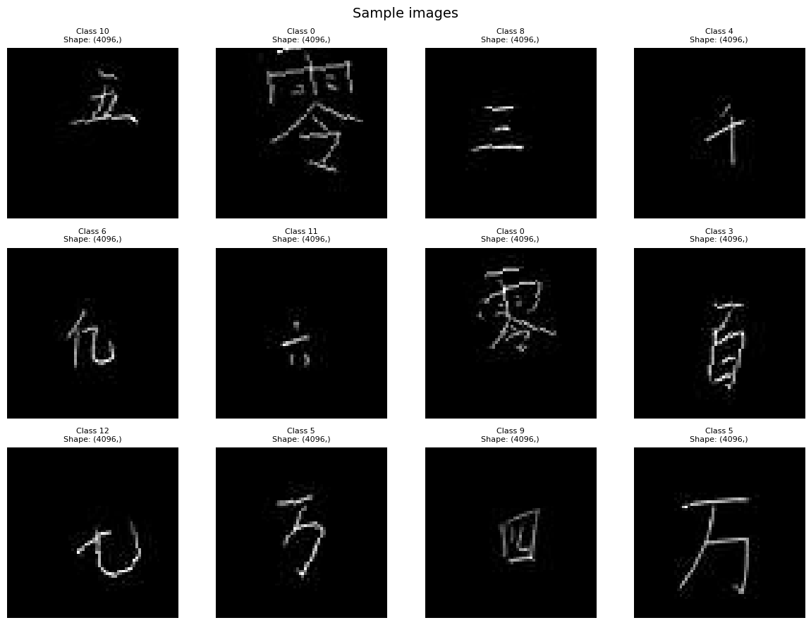

Logistic Regression
Overview
This script trains a single linear (logistic regression) classifier on the flattened 64×64 grayscale Chinese MNIST images. It explores a small hyperparameter grid across batch size, optimizer, and learning rate, evaluates all saved checkpoints on the test set, then reports and visualizes the best performer.
Pipeline Steps
Dataset preparation / validation via
preprocessing_utils.prepare_images.Construction of train / validation / test DataLoaders (optionally with light augmentation on the training split) via
preprocessing_utils.get_dataloaders.Definition of a single-layer linear classifier (
LogisticRegressionModel).Training across the grid:
- batch_size:
[32, 256](NOTE: The earlier 64 value was removed to reduce runtime / memory.) - optimizer:
AdamandSGD(SGD uses momentum=0.9) - learning_rate:
[0.01, 0.001, 0.0005](updated;0.005no longer used) - epochs: 30 (with early stopping)
- early stopping patience: 5 epochs (monitors validation accuracy)
- batch_size:
Checkpoint saving: best validation accuracy per run →
checkpoints/log_reg/model_{batch}_{optimizer}_{lr}.pthCurve plotting: training / validation accuracy & loss →
plots/log_reg/Test evaluation of every checkpoint (accuracy, macro‑F1, confusion matrix) to find best model.
Confusion matrix plotting for the best checkpoint.
Simple per‑class qualitative inference (one random test image per class) using the best model.
Key Assumptions
- Inputs passed to :class:
LogisticRegressionModelare already flattened to shape(batch_size, input_dim). The module does not perform flattening internally. input_dimis inferred dynamically from a sample batch after the initial DataLoader creation.- Utilities sourced from
preprocessing_utils.pyandmodels_utils.py(training loop, evaluation, plotting, prediction helper). - Returned values from :func:
predict_imageare raw logits (not softmax probabilities). When the script prints them it labels them as probabilities for convenience; applytorch.softmax(logits, dim=0)if true probabilities are required.
Run
| python log_reg.py |
|---|
- Random sampling (image previews, per-class inference) is not seeded; set a manual seed if deterministic behavior is needed. - Early stopping triggers when validation accuracy fails to improve for patience epochs; best checkpoint is preserved. |
| ::: {#0ecdd564 .cell} ``` {.python .cell-code} import os import re import random import torch from torchinfo import summary from preprocessing_utils import prepare_images, get_dataloaders, summarize_split, preview_random_images, show_batch from models_utils import train_model, test_model, plot_confusion_matrix, plot_training_process, predict_image |
| class LogisticRegressionModel(torch.nn.Module): ““” Baseline 0: Logistic Regression for Chinese Characters. |
A single linear layer mapping input_dim -> num_classes trained with cross-entropy. Note: This module does not apply any activation or flattening internally. |
| Args: input_dim (int): Number of input features per sample (e.g., 64*64 for a 1x64x64 image if flattened). num_classes (int): Number of target classes. ““” |
| def init(self, input_dim, num_classes): super().__init__() self.linear = torch.nn.Linear(input_dim, num_classes) |
| def forward(self, x): ““” Compute logits for a batch. |
Args: x (torch.Tensor): Input tensor of shape (batch_size, input_dim). Must be 2D and already flattened. |
Returns: torch.Tensor: Logits of shape (batch_size, num_classes). ““” return self.linear(x) |
| if name == “main”: |
| # Check PyTorch version print(torch.__version__) # Device setup device = torch.device(“cuda” if torch.cuda.is_available() else “cpu”) print(f”Using device: {device}“) |
| # Getting images ready # Prepare dataset root = prepare_images() print(f”Dataset ready at: {root}“) # Summarize dataset summarize_split(str(root)) # Preview random images preview_random_images(data_dir=str(root /”c_mnist”), n_images=9, grid_size=(3, 3)) |
| # Preprocessing # Get dataloaders dataloaders, datasets = get_dataloaders(data_dir=“data”, batch_size=64, image_size=(64, 64), augment=True) labels = datasets[‘train’].classes print(“DataLoaders ready.”) print(f”Classes: {labels}“) |
| show_batch(datasets[“train”], n=12, cols=4) |
| # Hyperparameters sample_batch = next(iter(dataloaders[“train”]))[0] INPUT_DIM = sample_batch.shape[1] if sample_batch.ndim == 2 else sample_batch[0].numel() NUM_CLASSES = len(labels) # Batch sizes explored (kept small & large for gradient noise vs. stability comparison) BATCH_SIZE = [32, 256] EPOCHS = 30 LEARNING_RATE = [0.01, 0.001, 0.0005] WEIGHT_DECAY = 5e-4 MOMENTUM = 0.9 # For SGD PATIENCE = 5 |
| # Model definition log_reg_model = LogisticRegressionModel(input_dim=INPUT_DIM, num_classes=NUM_CLASSES).to(device) |
| # Loss and optimizer criterion = torch.nn.CrossEntropyLoss() |
| # Model summary print(f”Logistic Regression summary (input_dim={INPUT_DIM}, num_classes={NUM_CLASSES})“) summary(log_reg_model, input_size=(1, INPUT_DIM), col_names=(”input_size”, “output_size”, “num_params”)) |
| # Training dataloaders_dict = {} for bs in BATCH_SIZE: dl, _ = get_dataloaders( data_dir=“data”, batch_size=bs, image_size=(64, 64), augment=True) dataloaders_dict[bs] = dl print(f”DataLoaders for batch size {bs} ready.”) |
| total_acc_train_sgd = {} total_acc_validation_sgd = {} total_loss_train_sgd = {} total_loss_validation_sgd = {} |
| total_acc_train_adam = {} total_acc_validation_adam = {} total_loss_train_adam = {} total_loss_validation_adam = {} |
| for bs in BATCH_SIZE: print(f”with batch size: {bs}“) dataloaders = dataloaders_dict[bs] run_idx = 1 for lr in LEARNING_RATE: # Adam run print(f” Run {run_idx}: Adam optimizer with lr={lr}“) model_adam = LogisticRegressionModel(INPUT_DIM, NUM_CLASSES).to(device) adam_opt = torch.optim.Adam(model_adam.parameters(), lr=lr, weight_decay=WEIGHT_DECAY) ( acc_train_adam, loss_train_adam, acc_val_adam, loss_val_adam, ) = train_model( model_adam, dataloaders, adam_opt, criterion, epochs=EPOCHS, patience=PATIENCE, save_path=f”checkpoints/log_reg/model_{bs}adam{lr}.pth”, ) total_acc_train_adam[(bs, lr)] = acc_train_adam total_loss_train_adam[(bs, lr)] = loss_train_adam total_acc_validation_adam[(bs, lr)] = acc_val_adam total_loss_validation_adam[(bs, lr)] = loss_val_adam |
| # SGD run print(f” Run {run_idx}: SGD optimizer with lr={lr}, momentum={MOMENTUM}“) model_sgd = LogisticRegressionModel(INPUT_DIM, NUM_CLASSES).to(device) sgd_opt = torch.optim.SGD(model_sgd.parameters(), lr=lr, momentum=MOMENTUM, weight_decay=WEIGHT_DECAY) ( acc_train_sgd, loss_train_sgd, acc_val_sgd, loss_val_sgd, ) = train_model( model_sgd, dataloaders, sgd_opt, criterion, epochs=EPOCHS, patience=PATIENCE, save_path=f”checkpoints/log_reg/model_{bs}sgd{lr}.pth”, ) total_acc_train_sgd[(bs, lr)] = acc_train_sgd total_loss_train_sgd[(bs, lr)] = loss_train_sgd total_acc_validation_sgd[(bs, lr)] = acc_val_sgd total_loss_validation_sgd[(bs, lr)] = loss_val_sgd |
| run_idx += 1 |
| # Plotting training process for bs in BATCH_SIZE: for lr in LEARNING_RATE: print(f”training process for batch size {bs} and learning rate {lr} (SGD)“) plot_training_process( total_acc_train_sgd[(bs, lr)], total_loss_train_sgd[(bs, lr)], total_acc_validation_sgd[(bs, lr)], total_loss_validation_sgd[(bs, lr)], f”plots/log_reg/training_process_{bs}_{lr}_sgd.png”, plot=False ) |
| print(f”training process for batch size {bs} and learning rate {lr} (Adam)“) plot_training_process( total_acc_train_adam[(bs, lr)], total_loss_train_adam[(bs, lr)], total_acc_validation_adam[(bs, lr)], total_loss_validation_adam[(bs, lr)], f”plots/log_reg/training_process_{bs}_{lr}_adam.png”, plot=False ) |
| # Testing MODELS_DIR = “checkpoints/log_reg” |
| best = { “path”: None, “acc”: 0.0, “f1”: 0.0, “cm”: None } |
| # Iterate over all .pth files in directory if os.path.isdir(MODELS_DIR): for model_file in os.listdir(MODELS_DIR): if not model_file.endswith(“.pth”): continue |
| model_path = os.path.join(MODELS_DIR, model_file) print(f”model: {model_path}“) |
| # Extract batch size from filename (model_32_adam_0.01.pth → 32) match = re.search(r”model_()_“, model_file) if not match: print(f”Could not extract batch size from {model_file}, skipping…“) continue batch_size = int(match.group(1)) |
| # Load model log_reg_model = LogisticRegressionModel(INPUT_DIM, NUM_CLASSES).to(device) log_reg_model.load_state_dict(torch.load(model_path, map_location=device)) log_reg_model.eval() |
| # Evaluate with correct dataloader test_loader = dataloaders_dict.get(batch_size, dataloaders_dict[BATCH_SIZE[0]])[“test”] test_acc, f1, cm = test_model(log_reg_model, test_loader, criterion) |
| print(f”Accuracy: {test_acc:.4f} | F1: {f1:.4f}“) |
| # Update best model if test_acc > best[“acc”]: best.update({“path”: model_path, “acc”: test_acc, “f1”: f1, “cm”: cm}) print(f”New best model: {model_path} (Acc: {test_acc:.4f}, F1: {f1:.4f})“) else: print(f”Models directory not found: {MODELS_DIR}“) |
| # Plot training process and confusion matrix of the best model if best[“cm”] is not None: print(f”model: {best[‘path’]} | Acc: {best[‘acc’]:.4f} | F1: {best[‘f1’]:.4f}“) plot_confusion_matrix(best[“cm”], datasets[“train”].classes) |
| # Extract batch size and learning rate from best model filename m = re.search(r”model_()(adam|sgd)([0-9.]+).pth”, os.path.basename(best[“path”])) if m: batch_size = int(m.group(1)) optimizer = m.group(2) learning_rate = float(m.group(3)) print(f”Extracted batch size: {batch_size}, optimizer: {optimizer}, learning rate: {learning_rate}“) if optimizer ==”sgd”: plot_training_process( total_acc_train_sgd[(batch_size, learning_rate)], total_loss_train_sgd[(batch_size, learning_rate)], total_acc_validation_sgd[(batch_size, learning_rate)], total_loss_validation_sgd[(batch_size, learning_rate)], f”plots/log_reg/best_model_training_process_{batch_size}{learning_rate}{optimizer}.png” ) else: plot_training_process( total_acc_train_adam[(batch_size, learning_rate)], total_loss_train_adam[(batch_size, learning_rate)], total_acc_validation_adam[(batch_size, learning_rate)], total_loss_validation_adam[(batch_size, learning_rate)], f”plots/log_reg/best_model_training_process_{batch_size}{learning_rate}{optimizer}.png”, plot=True ) else: print(“Could not extract parameters from best model filename. Skipping best-run plot.”) |
| # Inference on random images from test set # Collect one random image per class folder in data/test TEST_ROOT = “data/test” selected_images = [] for cls in sorted(os.listdir(TEST_ROOT)): cls_dir = os.path.join(TEST_ROOT, cls) if not os.path.isdir(cls_dir): continue imgs = [f for f in os.listdir(cls_dir) if f.lower().endswith((“.jpg”,))] if not imgs: continue selected = os.path.join(cls_dir, random.choice(imgs)) selected_images.append(selected) |
| if best[“path”]: log_reg_model = LogisticRegressionModel(INPUT_DIM, NUM_CLASSES).to(device) log_reg_model.load_state_dict(torch.load(best[“path”], map_location=device)) log_reg_model.eval() |
| for img_path in selected_images: print(f”Selected image for prediction: {img_path}“) prediction, logits = predict_image( model=log_reg_model, image_path=img_path, class_names=datasets[‘train’].classes, device=device, ) # NOTE: ‘logits’ are raw scores; apply torch.softmax(logits, dim=0) for probabilities print(f”Predicted class: {prediction} | Logits: {logits}“) else: print(”No best model available; skipping inference.”) |
| ``` |
| ::: {.cell-output .cell-output-stdout} |
| ::: {.cell-output .cell-output-display} ::: |
| ::: {.cell-output .cell-output-stdout} |
| ::: {.cell-output .cell-output-display}  ::: |
| ::: {.cell-output .cell-output-stdout} ``` Logistic Regression summary (input_dim=4096, num_classes=15) DataLoaders for batch size 32 ready. DataLoaders for batch size 256 ready. |
| Training with batch size: 32 Run 1: Adam optimizer with lr=0.01 Epoch 01 | Train Loss: 2.1669 | Train Acc: 0.3475 | Val Loss: 1.9132 | Val Acc: 0.4367 |
Model saved to checkpoints_reg_32_adam_0.01.pth Saved new best checkpoint (epoch 1, val_acc=0.4367) —————————————————————————————— Epoch 02 | Train Loss: 2.0263 | Train Acc: 0.3997 | Val Loss: 1.8408 | Val Acc: 0.4593 —————————————————————————————— Model saved to checkpoints_reg_32_adam_0.01.pth Saved new best checkpoint (epoch 2, val_acc=0.4593) —————————————————————————————— Epoch 03 | Train Loss: 1.9777 | Train Acc: 0.4106 | Val Loss: 1.7989 | Val Acc: 0.4533 —————————————————————————————— Epoch 04 | Train Loss: 1.9793 | Train Acc: 0.4020 | Val Loss: 1.7714 | Val Acc: 0.4547 —————————————————————————————— Epoch 05 | Train Loss: 1.9593 | Train Acc: 0.4021 | Val Loss: 1.7907 | Val Acc: 0.4360 —————————————————————————————— Epoch 06 | Train Loss: 1.9576 | Train Acc: 0.4023 | Val Loss: 1.7960 | Val Acc: 0.4493 —————————————————————————————— Epoch 07 | Train Loss: 1.9566 | Train Acc: 0.4064 | Val Loss: 1.7827 | Val Acc: 0.4440 —————————————————————————————— Early stopping at epoch 7. Best val acc: 0.4593 (epoch 2) Training finished. Best val acc: 0.4593 (epoch 2) ========================================================================================== Run 1: SGD optimizer with lr=0.01, momentum=0.9 Epoch 01 | Train Loss: 2.5244 | Train Acc: 0.2201 | Val Loss: 2.3441 | Val Acc: 0.3720 —————————————————————————————— Model saved to checkpoints_reg_32_sgd_0.01.pth Saved new best checkpoint (epoch 1, val_acc=0.3720) —————————————————————————————— Epoch 02 | Train Loss: 2.3087 | Train Acc: 0.3534 | Val Loss: 2.1720 | Val Acc: 0.4287 —————————————————————————————— Model saved to checkpoints_reg_32_sgd_0.01.pth Saved new best checkpoint (epoch 2, val_acc=0.4287) —————————————————————————————— Epoch 03 | Train Loss: 2.1971 | Train Acc: 0.3937 | Val Loss: 2.0727 | Val Acc: 0.4247 —————————————————————————————— Epoch 04 | Train Loss: 2.1303 | Train Acc: 0.3982 | Val Loss: 2.0010 | Val Acc: 0.4553 —————————————————————————————— Model saved to checkpoints_reg_32_sgd_0.01.pth Saved new best checkpoint (epoch 4, val_acc=0.4553) —————————————————————————————— Epoch 05 | Train Loss: 2.0764 | Train Acc: 0.4168 | Val Loss: 1.9532 | Val Acc: 0.4553 —————————————————————————————— Epoch 06 | Train Loss: 2.0563 | Train Acc: 0.4130 | Val Loss: 1.9173 | Val Acc: 0.4647 —————————————————————————————— Model saved to checkpoints_reg_32_sgd_0.01.pth Saved new best checkpoint (epoch 6, val_acc=0.4647) —————————————————————————————— Epoch 07 | Train Loss: 2.0134 | Train Acc: 0.4273 | Val Loss: 1.8885 | Val Acc: 0.4707 —————————————————————————————— Model saved to checkpoints_reg_32_sgd_0.01.pth Saved new best checkpoint (epoch 7, val_acc=0.4707) —————————————————————————————— Epoch 08 | Train Loss: 1.9945 | Train Acc: 0.4283 | Val Loss: 1.8605 | Val Acc: 0.4840 —————————————————————————————— Model saved to checkpoints_reg_32_sgd_0.01.pth Saved new best checkpoint (epoch 8, val_acc=0.4840) —————————————————————————————— Epoch 09 | Train Loss: 1.9753 | Train Acc: 0.4369 | Val Loss: 1.8397 | Val Acc: 0.4900 —————————————————————————————— Model saved to checkpoints_reg_32_sgd_0.01.pth Saved new best checkpoint (epoch 9, val_acc=0.4900) —————————————————————————————— Epoch 10 | Train Loss: 1.9602 | Train Acc: 0.4348 | Val Loss: 1.8249 | Val Acc: 0.4880 —————————————————————————————— Epoch 11 | Train Loss: 1.9492 | Train Acc: 0.4346 | Val Loss: 1.8108 | Val Acc: 0.4927 —————————————————————————————— Model saved to checkpoints_reg_32_sgd_0.01.pth Saved new best checkpoint (epoch 11, val_acc=0.4927) —————————————————————————————— Epoch 12 | Train Loss: 1.9351 | Train Acc: 0.4449 | Val Loss: 1.8024 | Val Acc: 0.4867 —————————————————————————————— Epoch 13 | Train Loss: 1.9305 | Train Acc: 0.4437 | Val Loss: 1.7883 | Val Acc: 0.4940 —————————————————————————————— Model saved to checkpoints_reg_32_sgd_0.01.pth Saved new best checkpoint (epoch 13, val_acc=0.4940) —————————————————————————————— Epoch 14 | Train Loss: 1.9228 | Train Acc: 0.4503 | Val Loss: 1.7795 | Val Acc: 0.4940 —————————————————————————————— Epoch 15 | Train Loss: 1.9153 | Train Acc: 0.4456 | Val Loss: 1.7706 | Val Acc: 0.4993 —————————————————————————————— Model saved to checkpoints_reg_32_sgd_0.01.pth Saved new best checkpoint (epoch 15, val_acc=0.4993) —————————————————————————————— Epoch 16 | Train Loss: 1.8985 | Train Acc: 0.4480 | Val Loss: 1.7603 | Val Acc: 0.5013 —————————————————————————————— Model saved to checkpoints_reg_32_sgd_0.01.pth Saved new best checkpoint (epoch 16, val_acc=0.5013) —————————————————————————————— Epoch 17 | Train Loss: 1.8951 | Train Acc: 0.4512 | Val Loss: 1.7553 | Val Acc: 0.5020 —————————————————————————————— Model saved to checkpoints_reg_32_sgd_0.01.pth Saved new best checkpoint (epoch 17, val_acc=0.5020) —————————————————————————————— Epoch 18 | Train Loss: 1.8834 | Train Acc: 0.4554 | Val Loss: 1.7479 | Val Acc: 0.5047 —————————————————————————————— Model saved to checkpoints_reg_32_sgd_0.01.pth Saved new best checkpoint (epoch 18, val_acc=0.5047) —————————————————————————————— Epoch 19 | Train Loss: 1.8897 | Train Acc: 0.4518 | Val Loss: 1.7446 | Val Acc: 0.5060 —————————————————————————————— Model saved to checkpoints_reg_32_sgd_0.01.pth Saved new best checkpoint (epoch 19, val_acc=0.5060) —————————————————————————————— Epoch 20 | Train Loss: 1.8845 | Train Acc: 0.4552 | Val Loss: 1.7381 | Val Acc: 0.5120 —————————————————————————————— Model saved to checkpoints_reg_32_sgd_0.01.pth Saved new best checkpoint (epoch 20, val_acc=0.5120) —————————————————————————————— Epoch 21 | Train Loss: 1.8861 | Train Acc: 0.4508 | Val Loss: 1.7370 | Val Acc: 0.5080 —————————————————————————————— Epoch 22 | Train Loss: 1.8775 | Train Acc: 0.4518 | Val Loss: 1.7375 | Val Acc: 0.5147 —————————————————————————————— Model saved to checkpoints_reg_32_sgd_0.01.pth Saved new best checkpoint (epoch 22, val_acc=0.5147) —————————————————————————————— Epoch 23 | Train Loss: 1.8778 | Train Acc: 0.4543 | Val Loss: 1.7324 | Val Acc: 0.5133 —————————————————————————————— Epoch 24 | Train Loss: 1.8756 | Train Acc: 0.4560 | Val Loss: 1.7279 | Val Acc: 0.5153 —————————————————————————————— Model saved to checkpoints_reg_32_sgd_0.01.pth Saved new best checkpoint (epoch 24, val_acc=0.5153) —————————————————————————————— Epoch 25 | Train Loss: 1.8729 | Train Acc: 0.4546 | Val Loss: 1.7258 | Val Acc: 0.5173 —————————————————————————————— Model saved to checkpoints_reg_32_sgd_0.01.pth Saved new best checkpoint (epoch 25, val_acc=0.5173) —————————————————————————————— Epoch 26 | Train Loss: 1.8691 | Train Acc: 0.4578 | Val Loss: 1.7250 | Val Acc: 0.5153 —————————————————————————————— Epoch 27 | Train Loss: 1.8646 | Train Acc: 0.4577 | Val Loss: 1.7220 | Val Acc: 0.5180 —————————————————————————————— Model saved to checkpoints_reg_32_sgd_0.01.pth Saved new best checkpoint (epoch 27, val_acc=0.5180) —————————————————————————————— Epoch 28 | Train Loss: 1.8530 | Train Acc: 0.4587 | Val Loss: 1.7185 | Val Acc: 0.5180 —————————————————————————————— Epoch 29 | Train Loss: 1.8552 | Train Acc: 0.4622 | Val Loss: 1.7166 | Val Acc: 0.5253 —————————————————————————————— Model saved to checkpoints_reg_32_sgd_0.01.pth Saved new best checkpoint (epoch 29, val_acc=0.5253) —————————————————————————————— Epoch 30 | Train Loss: 1.8471 | Train Acc: 0.4617 | Val Loss: 1.7139 | Val Acc: 0.5140 —————————————————————————————— Training finished. Best val acc: 0.5253 (epoch 29) ========================================================================================== Run 2: Adam optimizer with lr=0.001 Epoch 01 | Train Loss: 2.4054 | Train Acc: 0.2598 | Val Loss: 2.1843 | Val Acc: 0.3913 —————————————————————————————— Model saved to checkpoints_reg_32_adam_0.001.pth Saved new best checkpoint (epoch 1, val_acc=0.3913) —————————————————————————————— Epoch 02 | Train Loss: 2.1923 | Train Acc: 0.3836 | Val Loss: 2.0504 | Val Acc: 0.4280 —————————————————————————————— Model saved to checkpoints_reg_32_adam_0.001.pth Saved new best checkpoint (epoch 2, val_acc=0.4280) —————————————————————————————— Epoch 03 | Train Loss: 2.1179 | Train Acc: 0.4046 | Val Loss: 1.9818 | Val Acc: 0.4633 —————————————————————————————— Model saved to checkpoints_reg_32_adam_0.001.pth Saved new best checkpoint (epoch 3, val_acc=0.4633) —————————————————————————————— Epoch 04 | Train Loss: 2.0846 | Train Acc: 0.4100 | Val Loss: 1.9426 | Val Acc: 0.4700 —————————————————————————————— Model saved to checkpoints_reg_32_adam_0.001.pth Saved new best checkpoint (epoch 4, val_acc=0.4700) —————————————————————————————— Epoch 05 | Train Loss: 2.0395 | Train Acc: 0.4203 | Val Loss: 1.9120 | Val Acc: 0.4733 —————————————————————————————— Model saved to checkpoints_reg_32_adam_0.001.pth Saved new best checkpoint (epoch 5, val_acc=0.4733) —————————————————————————————— Epoch 06 | Train Loss: 2.0232 | Train Acc: 0.4283 | Val Loss: 1.8890 | Val Acc: 0.4840 —————————————————————————————— Model saved to checkpoints_reg_32_adam_0.001.pth Saved new best checkpoint (epoch 6, val_acc=0.4840) —————————————————————————————— Epoch 07 | Train Loss: 2.0133 | Train Acc: 0.4326 | Val Loss: 1.8708 | Val Acc: 0.4860 —————————————————————————————— Model saved to checkpoints_reg_32_adam_0.001.pth Saved new best checkpoint (epoch 7, val_acc=0.4860) —————————————————————————————— Epoch 08 | Train Loss: 1.9899 | Train Acc: 0.4377 | Val Loss: 1.8558 | Val Acc: 0.4840 —————————————————————————————— Epoch 09 | Train Loss: 1.9788 | Train Acc: 0.4433 | Val Loss: 1.8418 | Val Acc: 0.4947 —————————————————————————————— Model saved to checkpoints_reg_32_adam_0.001.pth Saved new best checkpoint (epoch 9, val_acc=0.4947) —————————————————————————————— Epoch 10 | Train Loss: 1.9612 | Train Acc: 0.4445 | Val Loss: 1.8293 | Val Acc: 0.4913 —————————————————————————————— Epoch 11 | Train Loss: 1.9537 | Train Acc: 0.4535 | Val Loss: 1.8132 | Val Acc: 0.4887 —————————————————————————————— Epoch 12 | Train Loss: 1.9412 | Train Acc: 0.4507 | Val Loss: 1.8052 | Val Acc: 0.4953 —————————————————————————————— Model saved to checkpoints_reg_32_adam_0.001.pth Saved new best checkpoint (epoch 12, val_acc=0.4953) —————————————————————————————— Epoch 13 | Train Loss: 1.9398 | Train Acc: 0.4530 | Val Loss: 1.7999 | Val Acc: 0.4947 —————————————————————————————— Epoch 14 | Train Loss: 1.9265 | Train Acc: 0.4537 | Val Loss: 1.7920 | Val Acc: 0.4980 —————————————————————————————— Model saved to checkpoints_reg_32_adam_0.001.pth Saved new best checkpoint (epoch 14, val_acc=0.4980) —————————————————————————————— Epoch 15 | Train Loss: 1.9189 | Train Acc: 0.4592 | Val Loss: 1.7868 | Val Acc: 0.5040 —————————————————————————————— Model saved to checkpoints_reg_32_adam_0.001.pth Saved new best checkpoint (epoch 15, val_acc=0.5040) —————————————————————————————— Epoch 16 | Train Loss: 1.9182 | Train Acc: 0.4557 | Val Loss: 1.7815 | Val Acc: 0.5033 —————————————————————————————— Epoch 17 | Train Loss: 1.9190 | Train Acc: 0.4563 | Val Loss: 1.7755 | Val Acc: 0.5047 —————————————————————————————— Model saved to checkpoints_reg_32_adam_0.001.pth Saved new best checkpoint (epoch 17, val_acc=0.5047) —————————————————————————————— Epoch 18 | Train Loss: 1.9095 | Train Acc: 0.4569 | Val Loss: 1.7671 | Val Acc: 0.5067 —————————————————————————————— Model saved to checkpoints_reg_32_adam_0.001.pth Saved new best checkpoint (epoch 18, val_acc=0.5067) —————————————————————————————— Epoch 19 | Train Loss: 1.9095 | Train Acc: 0.4540 | Val Loss: 1.7637 | Val Acc: 0.5053 —————————————————————————————— Epoch 20 | Train Loss: 1.9055 | Train Acc: 0.4531 | Val Loss: 1.7568 | Val Acc: 0.5080 —————————————————————————————— Model saved to checkpoints_reg_32_adam_0.001.pth Saved new best checkpoint (epoch 20, val_acc=0.5080) —————————————————————————————— Epoch 21 | Train Loss: 1.9047 | Train Acc: 0.4513 | Val Loss: 1.7508 | Val Acc: 0.5067 —————————————————————————————— Epoch 22 | Train Loss: 1.8942 | Train Acc: 0.4567 | Val Loss: 1.7531 | Val Acc: 0.5027 —————————————————————————————— Epoch 23 | Train Loss: 1.8972 | Train Acc: 0.4507 | Val Loss: 1.7435 | Val Acc: 0.5113 —————————————————————————————— Model saved to checkpoints_reg_32_adam_0.001.pth Saved new best checkpoint (epoch 23, val_acc=0.5113) —————————————————————————————— Epoch 24 | Train Loss: 1.8890 | Train Acc: 0.4556 | Val Loss: 1.7460 | Val Acc: 0.5120 —————————————————————————————— Model saved to checkpoints_reg_32_adam_0.001.pth Saved new best checkpoint (epoch 24, val_acc=0.5120) —————————————————————————————— Epoch 25 | Train Loss: 1.8812 | Train Acc: 0.4608 | Val Loss: 1.7367 | Val Acc: 0.5280 —————————————————————————————— Model saved to checkpoints_reg_32_adam_0.001.pth Saved new best checkpoint (epoch 25, val_acc=0.5280) —————————————————————————————— Epoch 26 | Train Loss: 1.8872 | Train Acc: 0.4566 | Val Loss: 1.7318 | Val Acc: 0.5153 —————————————————————————————— Epoch 27 | Train Loss: 1.8738 | Train Acc: 0.4621 | Val Loss: 1.7279 | Val Acc: 0.5213 —————————————————————————————— Epoch 28 | Train Loss: 1.8764 | Train Acc: 0.4607 | Val Loss: 1.7305 | Val Acc: 0.5133 —————————————————————————————— Epoch 29 | Train Loss: 1.8712 | Train Acc: 0.4571 | Val Loss: 1.7279 | Val Acc: 0.5140 —————————————————————————————— Epoch 30 | Train Loss: 1.8737 | Train Acc: 0.4594 | Val Loss: 1.7256 | Val Acc: 0.5153 —————————————————————————————— Early stopping at epoch 30. Best val acc: 0.5280 (epoch 25) Training finished. Best val acc: 0.5280 (epoch 25) ========================================================================================== Run 2: SGD optimizer with lr=0.001, momentum=0.9 Epoch 01 | Train Loss: 2.6801 | Train Acc: 0.1061 | Val Loss: 2.6454 | Val Acc: 0.1207 —————————————————————————————— Model saved to checkpoints_reg_32_sgd_0.001.pth Saved new best checkpoint (epoch 1, val_acc=0.1207) —————————————————————————————— Epoch 02 | Train Loss: 2.6296 | Train Acc: 0.1246 | Val Loss: 2.5946 | Val Acc: 0.1567 —————————————————————————————— Model saved to checkpoints_reg_32_sgd_0.001.pth Saved new best checkpoint (epoch 2, val_acc=0.1567) —————————————————————————————— Epoch 03 | Train Loss: 2.5878 | Train Acc: 0.1640 | Val Loss: 2.5512 | Val Acc: 0.2073 —————————————————————————————— Model saved to checkpoints_reg_32_sgd_0.001.pth Saved new best checkpoint (epoch 3, val_acc=0.2073) —————————————————————————————— Epoch 04 | Train Loss: 2.5527 | Train Acc: 0.1988 | Val Loss: 2.5119 | Val Acc: 0.2513 —————————————————————————————— Model saved to checkpoints_reg_32_sgd_0.001.pth Saved new best checkpoint (epoch 4, val_acc=0.2513) —————————————————————————————— Epoch 05 | Train Loss: 2.5196 | Train Acc: 0.2432 | Val Loss: 2.4770 | Val Acc: 0.2927 —————————————————————————————— Model saved to checkpoints_reg_32_sgd_0.001.pth Saved new best checkpoint (epoch 5, val_acc=0.2927) —————————————————————————————— Epoch 06 | Train Loss: 2.4894 | Train Acc: 0.2723 | Val Loss: 2.4447 | Val Acc: 0.3333 —————————————————————————————— Model saved to checkpoints_reg_32_sgd_0.001.pth Saved new best checkpoint (epoch 6, val_acc=0.3333) —————————————————————————————— Epoch 07 | Train Loss: 2.4632 | Train Acc: 0.2913 | Val Loss: 2.4153 | Val Acc: 0.3527 —————————————————————————————— Model saved to checkpoints_reg_32_sgd_0.001.pth Saved new best checkpoint (epoch 7, val_acc=0.3527) —————————————————————————————— Epoch 08 | Train Loss: 2.4410 | Train Acc: 0.3045 | Val Loss: 2.3885 | Val Acc: 0.3667 —————————————————————————————— Model saved to checkpoints_reg_32_sgd_0.001.pth Saved new best checkpoint (epoch 8, val_acc=0.3667) —————————————————————————————— Epoch 09 | Train Loss: 2.4181 | Train Acc: 0.3253 | Val Loss: 2.3633 | Val Acc: 0.3767 —————————————————————————————— Model saved to checkpoints_reg_32_sgd_0.001.pth Saved new best checkpoint (epoch 9, val_acc=0.3767) —————————————————————————————— Epoch 10 | Train Loss: 2.3986 | Train Acc: 0.3294 | Val Loss: 2.3401 | Val Acc: 0.3860 —————————————————————————————— Model saved to checkpoints_reg_32_sgd_0.001.pth Saved new best checkpoint (epoch 10, val_acc=0.3860) —————————————————————————————— Epoch 11 | Train Loss: 2.3754 | Train Acc: 0.3422 | Val Loss: 2.3183 | Val Acc: 0.3933 —————————————————————————————— Model saved to checkpoints_reg_32_sgd_0.001.pth Saved new best checkpoint (epoch 11, val_acc=0.3933) —————————————————————————————— Epoch 12 | Train Loss: 2.3554 | Train Acc: 0.3538 | Val Loss: 2.2975 | Val Acc: 0.3980 —————————————————————————————— Model saved to checkpoints_reg_32_sgd_0.001.pth Saved new best checkpoint (epoch 12, val_acc=0.3980) —————————————————————————————— Epoch 13 | Train Loss: 2.3402 | Train Acc: 0.3585 | Val Loss: 2.2783 | Val Acc: 0.4033 —————————————————————————————— Model saved to checkpoints_reg_32_sgd_0.001.pth Saved new best checkpoint (epoch 13, val_acc=0.4033) —————————————————————————————— Epoch 14 | Train Loss: 2.3245 | Train Acc: 0.3649 | Val Loss: 2.2602 | Val Acc: 0.4073 —————————————————————————————— Model saved to checkpoints_reg_32_sgd_0.001.pth Saved new best checkpoint (epoch 14, val_acc=0.4073) —————————————————————————————— Epoch 15 | Train Loss: 2.3098 | Train Acc: 0.3637 | Val Loss: 2.2431 | Val Acc: 0.4140 —————————————————————————————— Model saved to checkpoints_reg_32_sgd_0.001.pth Saved new best checkpoint (epoch 15, val_acc=0.4140) —————————————————————————————— Epoch 16 | Train Loss: 2.2964 | Train Acc: 0.3706 | Val Loss: 2.2270 | Val Acc: 0.4167 —————————————————————————————— Model saved to checkpoints_reg_32_sgd_0.001.pth Saved new best checkpoint (epoch 16, val_acc=0.4167) —————————————————————————————— Epoch 17 | Train Loss: 2.2835 | Train Acc: 0.3738 | Val Loss: 2.2116 | Val Acc: 0.4233 —————————————————————————————— Model saved to checkpoints_reg_32_sgd_0.001.pth Saved new best checkpoint (epoch 17, val_acc=0.4233) —————————————————————————————— Epoch 18 | Train Loss: 2.2683 | Train Acc: 0.3777 | Val Loss: 2.1972 | Val Acc: 0.4240 —————————————————————————————— Model saved to checkpoints_reg_32_sgd_0.001.pth Saved new best checkpoint (epoch 18, val_acc=0.4240) —————————————————————————————— Epoch 19 | Train Loss: 2.2622 | Train Acc: 0.3776 | Val Loss: 2.1837 | Val Acc: 0.4293 —————————————————————————————— Model saved to checkpoints_reg_32_sgd_0.001.pth Saved new best checkpoint (epoch 19, val_acc=0.4293) —————————————————————————————— Epoch 20 | Train Loss: 2.2476 | Train Acc: 0.3833 | Val Loss: 2.1705 | Val Acc: 0.4313 —————————————————————————————— Model saved to checkpoints_reg_32_sgd_0.001.pth Saved new best checkpoint (epoch 20, val_acc=0.4313) —————————————————————————————— Epoch 21 | Train Loss: 2.2366 | Train Acc: 0.3787 | Val Loss: 2.1580 | Val Acc: 0.4307 —————————————————————————————— Epoch 22 | Train Loss: 2.2256 | Train Acc: 0.3865 | Val Loss: 2.1462 | Val Acc: 0.4353 —————————————————————————————— Model saved to checkpoints_reg_32_sgd_0.001.pth Saved new best checkpoint (epoch 22, val_acc=0.4353) —————————————————————————————— Epoch 23 | Train Loss: 2.2195 | Train Acc: 0.3883 | Val Loss: 2.1348 | Val Acc: 0.4393 —————————————————————————————— Model saved to checkpoints_reg_32_sgd_0.001.pth Saved new best checkpoint (epoch 23, val_acc=0.4393) —————————————————————————————— Epoch 24 | Train Loss: 2.2050 | Train Acc: 0.3965 | Val Loss: 2.1241 | Val Acc: 0.4427 —————————————————————————————— Model saved to checkpoints_reg_32_sgd_0.001.pth Saved new best checkpoint (epoch 24, val_acc=0.4427) —————————————————————————————— Epoch 25 | Train Loss: 2.1993 | Train Acc: 0.3966 | Val Loss: 2.1137 | Val Acc: 0.4427 —————————————————————————————— Epoch 26 | Train Loss: 2.1923 | Train Acc: 0.3961 | Val Loss: 2.1036 | Val Acc: 0.4433 —————————————————————————————— Model saved to checkpoints_reg_32_sgd_0.001.pth Saved new best checkpoint (epoch 26, val_acc=0.4433) —————————————————————————————— Epoch 27 | Train Loss: 2.1825 | Train Acc: 0.3970 | Val Loss: 2.0940 | Val Acc: 0.4473 —————————————————————————————— Model saved to checkpoints_reg_32_sgd_0.001.pth Saved new best checkpoint (epoch 27, val_acc=0.4473) —————————————————————————————— Epoch 28 | Train Loss: 2.1713 | Train Acc: 0.4001 | Val Loss: 2.0848 | Val Acc: 0.4473 —————————————————————————————— Epoch 29 | Train Loss: 2.1651 | Train Acc: 0.4044 | Val Loss: 2.0759 | Val Acc: 0.4467 —————————————————————————————— Epoch 30 | Train Loss: 2.1550 | Train Acc: 0.4051 | Val Loss: 2.0673 | Val Acc: 0.4487 —————————————————————————————— Model saved to checkpoints_reg_32_sgd_0.001.pth Saved new best checkpoint (epoch 30, val_acc=0.4487) —————————————————————————————— Training finished. Best val acc: 0.4487 (epoch 30) ========================================================================================== Run 3: Adam optimizer with lr=0.0005 Epoch 01 | Train Loss: 2.5067 | Train Acc: 0.1971 | Val Loss: 2.3356 | Val Acc: 0.3167 —————————————————————————————— Model saved to checkpoints_reg_32_adam_0.0005.pth Saved new best checkpoint (epoch 1, val_acc=0.3167) —————————————————————————————— Epoch 02 | Train Loss: 2.3160 | Train Acc: 0.3285 | Val Loss: 2.1965 | Val Acc: 0.3947 —————————————————————————————— Model saved to checkpoints_reg_32_adam_0.0005.pth Saved new best checkpoint (epoch 2, val_acc=0.3947) —————————————————————————————— Epoch 03 | Train Loss: 2.2202 | Train Acc: 0.3697 | Val Loss: 2.1112 | Val Acc: 0.4187 —————————————————————————————— Model saved to checkpoints_reg_32_adam_0.0005.pth Saved new best checkpoint (epoch 3, val_acc=0.4187) —————————————————————————————— Epoch 04 | Train Loss: 2.1772 | Train Acc: 0.3800 | Val Loss: 2.0550 | Val Acc: 0.4353 —————————————————————————————— Model saved to checkpoints_reg_32_adam_0.0005.pth Saved new best checkpoint (epoch 4, val_acc=0.4353) —————————————————————————————— Epoch 05 | Train Loss: 2.1260 | Train Acc: 0.4056 | Val Loss: 2.0139 | Val Acc: 0.4487 —————————————————————————————— Model saved to checkpoints_reg_32_adam_0.0005.pth Saved new best checkpoint (epoch 5, val_acc=0.4487) —————————————————————————————— Epoch 06 | Train Loss: 2.1035 | Train Acc: 0.4069 | Val Loss: 1.9860 | Val Acc: 0.4467 —————————————————————————————— Epoch 07 | Train Loss: 2.0856 | Train Acc: 0.4108 | Val Loss: 1.9617 | Val Acc: 0.4573 —————————————————————————————— Model saved to checkpoints_reg_32_adam_0.0005.pth Saved new best checkpoint (epoch 7, val_acc=0.4573) —————————————————————————————— Epoch 08 | Train Loss: 2.0570 | Train Acc: 0.4221 | Val Loss: 1.9405 | Val Acc: 0.4660 —————————————————————————————— Model saved to checkpoints_reg_32_adam_0.0005.pth Saved new best checkpoint (epoch 8, val_acc=0.4660) —————————————————————————————— Epoch 09 | Train Loss: 2.0554 | Train Acc: 0.4245 | Val Loss: 1.9230 | Val Acc: 0.4667 —————————————————————————————— Model saved to checkpoints_reg_32_adam_0.0005.pth Saved new best checkpoint (epoch 9, val_acc=0.4667) —————————————————————————————— Epoch 10 | Train Loss: 2.0388 | Train Acc: 0.4278 | Val Loss: 1.9090 | Val Acc: 0.4740 —————————————————————————————— Model saved to checkpoints_reg_32_adam_0.0005.pth Saved new best checkpoint (epoch 10, val_acc=0.4740) —————————————————————————————— Epoch 11 | Train Loss: 2.0254 | Train Acc: 0.4328 | Val Loss: 1.8962 | Val Acc: 0.4753 —————————————————————————————— Model saved to checkpoints_reg_32_adam_0.0005.pth Saved new best checkpoint (epoch 11, val_acc=0.4753) —————————————————————————————— Epoch 12 | Train Loss: 2.0091 | Train Acc: 0.4323 | Val Loss: 1.8837 | Val Acc: 0.4707 —————————————————————————————— Epoch 13 | Train Loss: 2.0170 | Train Acc: 0.4283 | Val Loss: 1.8731 | Val Acc: 0.4833 —————————————————————————————— Model saved to checkpoints_reg_32_adam_0.0005.pth Saved new best checkpoint (epoch 13, val_acc=0.4833) —————————————————————————————— Epoch 14 | Train Loss: 1.9953 | Train Acc: 0.4394 | Val Loss: 1.8625 | Val Acc: 0.4880 —————————————————————————————— Model saved to checkpoints_reg_32_adam_0.0005.pth Saved new best checkpoint (epoch 14, val_acc=0.4880) —————————————————————————————— Epoch 15 | Train Loss: 1.9902 | Train Acc: 0.4387 | Val Loss: 1.8533 | Val Acc: 0.4973 —————————————————————————————— Model saved to checkpoints_reg_32_adam_0.0005.pth Saved new best checkpoint (epoch 15, val_acc=0.4973) —————————————————————————————— Epoch 16 | Train Loss: 1.9826 | Train Acc: 0.4397 | Val Loss: 1.8485 | Val Acc: 0.4913 —————————————————————————————— Epoch 17 | Train Loss: 1.9676 | Train Acc: 0.4493 | Val Loss: 1.8374 | Val Acc: 0.4940 —————————————————————————————— Epoch 18 | Train Loss: 1.9666 | Train Acc: 0.4514 | Val Loss: 1.8298 | Val Acc: 0.4940 —————————————————————————————— Epoch 19 | Train Loss: 1.9567 | Train Acc: 0.4507 | Val Loss: 1.8239 | Val Acc: 0.5007 —————————————————————————————— Model saved to checkpoints_reg_32_adam_0.0005.pth Saved new best checkpoint (epoch 19, val_acc=0.5007) —————————————————————————————— Epoch 20 | Train Loss: 1.9541 | Train Acc: 0.4445 | Val Loss: 1.8203 | Val Acc: 0.5027 —————————————————————————————— Model saved to checkpoints_reg_32_adam_0.0005.pth Saved new best checkpoint (epoch 20, val_acc=0.5027) —————————————————————————————— Epoch 21 | Train Loss: 1.9506 | Train Acc: 0.4502 | Val Loss: 1.8140 | Val Acc: 0.4933 —————————————————————————————— Epoch 22 | Train Loss: 1.9419 | Train Acc: 0.4555 | Val Loss: 1.8119 | Val Acc: 0.5073 —————————————————————————————— Model saved to checkpoints_reg_32_adam_0.0005.pth Saved new best checkpoint (epoch 22, val_acc=0.5073) —————————————————————————————— Epoch 23 | Train Loss: 1.9463 | Train Acc: 0.4494 | Val Loss: 1.8065 | Val Acc: 0.5020 —————————————————————————————— Epoch 24 | Train Loss: 1.9350 | Train Acc: 0.4512 | Val Loss: 1.8019 | Val Acc: 0.5047 —————————————————————————————— Epoch 25 | Train Loss: 1.9315 | Train Acc: 0.4519 | Val Loss: 1.7985 | Val Acc: 0.5047 —————————————————————————————— Epoch 26 | Train Loss: 1.9278 | Train Acc: 0.4512 | Val Loss: 1.7963 | Val Acc: 0.5127 —————————————————————————————— Model saved to checkpoints_reg_32_adam_0.0005.pth Saved new best checkpoint (epoch 26, val_acc=0.5127) —————————————————————————————— Epoch 27 | Train Loss: 1.9292 | Train Acc: 0.4547 | Val Loss: 1.7917 | Val Acc: 0.5100 —————————————————————————————— Epoch 28 | Train Loss: 1.9257 | Train Acc: 0.4574 | Val Loss: 1.7871 | Val Acc: 0.5113 —————————————————————————————— Epoch 29 | Train Loss: 1.9208 | Train Acc: 0.4582 | Val Loss: 1.7852 | Val Acc: 0.5033 —————————————————————————————— Epoch 30 | Train Loss: 1.9209 | Train Acc: 0.4560 | Val Loss: 1.7806 | Val Acc: 0.5047 —————————————————————————————— Training finished. Best val acc: 0.5127 (epoch 26) ========================================================================================== Run 3: SGD optimizer with lr=0.0005, momentum=0.9 Epoch 01 | Train Loss: 2.6938 | Train Acc: 0.1027 | Val Loss: 2.6743 | Val Acc: 0.1287 —————————————————————————————— Model saved to checkpoints_reg_32_sgd_0.0005.pth Saved new best checkpoint (epoch 1, val_acc=0.1287) —————————————————————————————— Epoch 02 | Train Loss: 2.6646 | Train Acc: 0.1198 | Val Loss: 2.6442 | Val Acc: 0.1313 —————————————————————————————— Model saved to checkpoints_reg_32_sgd_0.0005.pth Saved new best checkpoint (epoch 2, val_acc=0.1313) —————————————————————————————— Epoch 03 | Train Loss: 2.6393 | Train Acc: 0.1361 | Val Loss: 2.6177 | Val Acc: 0.1413 —————————————————————————————— Model saved to checkpoints_reg_32_sgd_0.0005.pth Saved new best checkpoint (epoch 3, val_acc=0.1413) —————————————————————————————— Epoch 04 | Train Loss: 2.6164 | Train Acc: 0.1480 | Val Loss: 2.5934 | Val Acc: 0.1520 —————————————————————————————— Model saved to checkpoints_reg_32_sgd_0.0005.pth Saved new best checkpoint (epoch 4, val_acc=0.1520) —————————————————————————————— Epoch 05 | Train Loss: 2.5958 | Train Acc: 0.1594 | Val Loss: 2.5710 | Val Acc: 0.1707 —————————————————————————————— Model saved to checkpoints_reg_32_sgd_0.0005.pth Saved new best checkpoint (epoch 5, val_acc=0.1707) —————————————————————————————— Epoch 06 | Train Loss: 2.5772 | Train Acc: 0.1780 | Val Loss: 2.5502 | Val Acc: 0.1933 —————————————————————————————— Model saved to checkpoints_reg_32_sgd_0.0005.pth Saved new best checkpoint (epoch 6, val_acc=0.1933) —————————————————————————————— Epoch 07 | Train Loss: 2.5600 | Train Acc: 0.1941 | Val Loss: 2.5306 | Val Acc: 0.2167 —————————————————————————————— Model saved to checkpoints_reg_32_sgd_0.0005.pth Saved new best checkpoint (epoch 7, val_acc=0.2167) —————————————————————————————— Epoch 08 | Train Loss: 2.5417 | Train Acc: 0.2049 | Val Loss: 2.5117 | Val Acc: 0.2380 —————————————————————————————— Model saved to checkpoints_reg_32_sgd_0.0005.pth Saved new best checkpoint (epoch 8, val_acc=0.2380) —————————————————————————————— Epoch 09 | Train Loss: 2.5255 | Train Acc: 0.2325 | Val Loss: 2.4936 | Val Acc: 0.2573 —————————————————————————————— Model saved to checkpoints_reg_32_sgd_0.0005.pth Saved new best checkpoint (epoch 9, val_acc=0.2573) —————————————————————————————— Epoch 10 | Train Loss: 2.5101 | Train Acc: 0.2449 | Val Loss: 2.4764 | Val Acc: 0.2753 —————————————————————————————— Model saved to checkpoints_reg_32_sgd_0.0005.pth Saved new best checkpoint (epoch 10, val_acc=0.2753) —————————————————————————————— Epoch 11 | Train Loss: 2.4968 | Train Acc: 0.2555 | Val Loss: 2.4601 | Val Acc: 0.2993 —————————————————————————————— Model saved to checkpoints_reg_32_sgd_0.0005.pth Saved new best checkpoint (epoch 11, val_acc=0.2993) —————————————————————————————— Epoch 12 | Train Loss: 2.4816 | Train Acc: 0.2698 | Val Loss: 2.4446 | Val Acc: 0.3173 —————————————————————————————— Model saved to checkpoints_reg_32_sgd_0.0005.pth Saved new best checkpoint (epoch 12, val_acc=0.3173) —————————————————————————————— Epoch 13 | Train Loss: 2.4686 | Train Acc: 0.2830 | Val Loss: 2.4293 | Val Acc: 0.3353 —————————————————————————————— Model saved to checkpoints_reg_32_sgd_0.0005.pth Saved new best checkpoint (epoch 13, val_acc=0.3353) —————————————————————————————— Epoch 14 | Train Loss: 2.4574 | Train Acc: 0.2880 | Val Loss: 2.4148 | Val Acc: 0.3493 —————————————————————————————— Model saved to checkpoints_reg_32_sgd_0.0005.pth Saved new best checkpoint (epoch 14, val_acc=0.3493) —————————————————————————————— Epoch 15 | Train Loss: 2.4444 | Train Acc: 0.3031 | Val Loss: 2.4010 | Val Acc: 0.3540 —————————————————————————————— Model saved to checkpoints_reg_32_sgd_0.0005.pth Saved new best checkpoint (epoch 15, val_acc=0.3540) —————————————————————————————— Epoch 16 | Train Loss: 2.4305 | Train Acc: 0.3116 | Val Loss: 2.3875 | Val Acc: 0.3567 —————————————————————————————— Model saved to checkpoints_reg_32_sgd_0.0005.pth Saved new best checkpoint (epoch 16, val_acc=0.3567) —————————————————————————————— Epoch 17 | Train Loss: 2.4216 | Train Acc: 0.3212 | Val Loss: 2.3748 | Val Acc: 0.3633 —————————————————————————————— Model saved to checkpoints_reg_32_sgd_0.0005.pth Saved new best checkpoint (epoch 17, val_acc=0.3633) —————————————————————————————— Epoch 18 | Train Loss: 2.4080 | Train Acc: 0.3280 | Val Loss: 2.3622 | Val Acc: 0.3707 —————————————————————————————— Model saved to checkpoints_reg_32_sgd_0.0005.pth Saved new best checkpoint (epoch 18, val_acc=0.3707) —————————————————————————————— Epoch 19 | Train Loss: 2.4020 | Train Acc: 0.3267 | Val Loss: 2.3505 | Val Acc: 0.3787 —————————————————————————————— Model saved to checkpoints_reg_32_sgd_0.0005.pth Saved new best checkpoint (epoch 19, val_acc=0.3787) —————————————————————————————— Epoch 20 | Train Loss: 2.3874 | Train Acc: 0.3370 | Val Loss: 2.3389 | Val Acc: 0.3820 —————————————————————————————— Model saved to checkpoints_reg_32_sgd_0.0005.pth Saved new best checkpoint (epoch 20, val_acc=0.3820) —————————————————————————————— Epoch 21 | Train Loss: 2.3780 | Train Acc: 0.3413 | Val Loss: 2.3277 | Val Acc: 0.3867 —————————————————————————————— Model saved to checkpoints_reg_32_sgd_0.0005.pth Saved new best checkpoint (epoch 21, val_acc=0.3867) —————————————————————————————— Epoch 22 | Train Loss: 2.3703 | Train Acc: 0.3425 | Val Loss: 2.3168 | Val Acc: 0.3913 —————————————————————————————— Model saved to checkpoints_reg_32_sgd_0.0005.pth Saved new best checkpoint (epoch 22, val_acc=0.3913) —————————————————————————————— Epoch 23 | Train Loss: 2.3627 | Train Acc: 0.3482 | Val Loss: 2.3064 | Val Acc: 0.3947 —————————————————————————————— Model saved to checkpoints_reg_32_sgd_0.0005.pth Saved new best checkpoint (epoch 23, val_acc=0.3947) —————————————————————————————— Epoch 24 | Train Loss: 2.3530 | Train Acc: 0.3498 | Val Loss: 2.2964 | Val Acc: 0.3960 —————————————————————————————— Model saved to checkpoints_reg_32_sgd_0.0005.pth Saved new best checkpoint (epoch 24, val_acc=0.3960) —————————————————————————————— Epoch 25 | Train Loss: 2.3437 | Train Acc: 0.3550 | Val Loss: 2.2866 | Val Acc: 0.3967 —————————————————————————————— Model saved to checkpoints_reg_32_sgd_0.0005.pth Saved new best checkpoint (epoch 25, val_acc=0.3967) —————————————————————————————— Epoch 26 | Train Loss: 2.3377 | Train Acc: 0.3566 | Val Loss: 2.2772 | Val Acc: 0.3967 —————————————————————————————— Epoch 27 | Train Loss: 2.3262 | Train Acc: 0.3674 | Val Loss: 2.2679 | Val Acc: 0.3987 —————————————————————————————— Model saved to checkpoints_reg_32_sgd_0.0005.pth Saved new best checkpoint (epoch 27, val_acc=0.3987) —————————————————————————————— Epoch 28 | Train Loss: 2.3200 | Train Acc: 0.3637 | Val Loss: 2.2589 | Val Acc: 0.4033 —————————————————————————————— Model saved to checkpoints_reg_32_sgd_0.0005.pth Saved new best checkpoint (epoch 28, val_acc=0.4033) —————————————————————————————— Epoch 29 | Train Loss: 2.3162 | Train Acc: 0.3653 | Val Loss: 2.2503 | Val Acc: 0.4047 —————————————————————————————— Model saved to checkpoints_reg_32_sgd_0.0005.pth Saved new best checkpoint (epoch 29, val_acc=0.4047) —————————————————————————————— Epoch 30 | Train Loss: 2.3069 | Train Acc: 0.3684 | Val Loss: 2.2419 | Val Acc: 0.4060 —————————————————————————————— Model saved to checkpoints_reg_32_sgd_0.0005.pth Saved new best checkpoint (epoch 30, val_acc=0.4060) —————————————————————————————— Training finished. Best val acc: 0.4060 (epoch 30) ==========================================================================================
Training with batch size: 256 Run 1: Adam optimizer with lr=0.01 Epoch 01 | Train Loss: 2.2720 | Train Acc: 0.2971 | Val Loss: 1.9875 | Val Acc: 0.4227 —————————————————————————————— Model saved to checkpoints_reg_256_adam_0.01.pth Saved new best checkpoint (epoch 1, val_acc=0.4227) —————————————————————————————— Epoch 02 | Train Loss: 2.0784 | Train Acc: 0.3955 | Val Loss: 1.9224 | Val Acc: 0.4460 —————————————————————————————— Model saved to checkpoints_reg_256_adam_0.01.pth Saved new best checkpoint (epoch 2, val_acc=0.4460) —————————————————————————————— Epoch 03 | Train Loss: 2.0184 | Train Acc: 0.4168 | Val Loss: 1.8866 | Val Acc: 0.4680 —————————————————————————————— Model saved to checkpoints_reg_256_adam_0.01.pth Saved new best checkpoint (epoch 3, val_acc=0.4680) —————————————————————————————— Epoch 04 | Train Loss: 2.0033 | Train Acc: 0.4301 | Val Loss: 1.8537 | Val Acc: 0.4760 —————————————————————————————— Model saved to checkpoints_reg_256_adam_0.01.pth Saved new best checkpoint (epoch 4, val_acc=0.4760) —————————————————————————————— Epoch 05 | Train Loss: 1.9845 | Train Acc: 0.4288 | Val Loss: 1.8308 | Val Acc: 0.4787 —————————————————————————————— Model saved to checkpoints_reg_256_adam_0.01.pth Saved new best checkpoint (epoch 5, val_acc=0.4787) —————————————————————————————— Epoch 06 | Train Loss: 1.9535 | Train Acc: 0.4365 | Val Loss: 1.8225 | Val Acc: 0.4727 —————————————————————————————— Epoch 07 | Train Loss: 1.9480 | Train Acc: 0.4360 | Val Loss: 1.8122 | Val Acc: 0.4920 —————————————————————————————— Model saved to checkpoints_reg_256_adam_0.01.pth Saved new best checkpoint (epoch 7, val_acc=0.4920) —————————————————————————————— Epoch 08 | Train Loss: 1.9324 | Train Acc: 0.4330 | Val Loss: 1.7930 | Val Acc: 0.4800 —————————————————————————————— Epoch 09 | Train Loss: 1.9308 | Train Acc: 0.4340 | Val Loss: 1.7818 | Val Acc: 0.4927 —————————————————————————————— Model saved to checkpoints_reg_256_adam_0.01.pth Saved new best checkpoint (epoch 9, val_acc=0.4927) —————————————————————————————— Epoch 10 | Train Loss: 1.9160 | Train Acc: 0.4377 | Val Loss: 1.7609 | Val Acc: 0.4867 —————————————————————————————— Epoch 11 | Train Loss: 1.9056 | Train Acc: 0.4431 | Val Loss: 1.7608 | Val Acc: 0.4787 —————————————————————————————— Epoch 12 | Train Loss: 1.8931 | Train Acc: 0.4461 | Val Loss: 1.7544 | Val Acc: 0.4940 —————————————————————————————— Model saved to checkpoints_reg_256_adam_0.01.pth Saved new best checkpoint (epoch 12, val_acc=0.4940) —————————————————————————————— Epoch 13 | Train Loss: 1.8969 | Train Acc: 0.4412 | Val Loss: 1.7475 | Val Acc: 0.5000 —————————————————————————————— Model saved to checkpoints_reg_256_adam_0.01.pth Saved new best checkpoint (epoch 13, val_acc=0.5000) —————————————————————————————— Epoch 14 | Train Loss: 1.8861 | Train Acc: 0.4445 | Val Loss: 1.7461 | Val Acc: 0.4953 —————————————————————————————— Epoch 15 | Train Loss: 1.8938 | Train Acc: 0.4379 | Val Loss: 1.7293 | Val Acc: 0.4973 —————————————————————————————— Epoch 16 | Train Loss: 1.8879 | Train Acc: 0.4377 | Val Loss: 1.7299 | Val Acc: 0.5033 —————————————————————————————— Model saved to checkpoints_reg_256_adam_0.01.pth Saved new best checkpoint (epoch 16, val_acc=0.5033) —————————————————————————————— Epoch 17 | Train Loss: 1.8846 | Train Acc: 0.4425 | Val Loss: 1.7303 | Val Acc: 0.4867 —————————————————————————————— Epoch 18 | Train Loss: 1.8759 | Train Acc: 0.4446 | Val Loss: 1.7309 | Val Acc: 0.4833 —————————————————————————————— Epoch 19 | Train Loss: 1.8768 | Train Acc: 0.4373 | Val Loss: 1.7197 | Val Acc: 0.5033 —————————————————————————————— Epoch 20 | Train Loss: 1.8756 | Train Acc: 0.4463 | Val Loss: 1.7239 | Val Acc: 0.4960 —————————————————————————————— Epoch 21 | Train Loss: 1.8693 | Train Acc: 0.4343 | Val Loss: 1.7148 | Val Acc: 0.4947 —————————————————————————————— Early stopping at epoch 21. Best val acc: 0.5033 (epoch 16) Training finished. Best val acc: 0.5033 (epoch 16) ========================================================================================== Run 1: SGD optimizer with lr=0.01, momentum=0.9 Epoch 01 | Train Loss: 2.6821 | Train Acc: 0.1043 | Val Loss: 2.6399 | Val Acc: 0.1187 —————————————————————————————— Model saved to checkpoints_reg_256_sgd_0.01.pth Saved new best checkpoint (epoch 1, val_acc=0.1187) —————————————————————————————— Epoch 02 | Train Loss: 2.6210 | Train Acc: 0.1308 | Val Loss: 2.5781 | Val Acc: 0.1587 —————————————————————————————— Model saved to checkpoints_reg_256_sgd_0.01.pth Saved new best checkpoint (epoch 2, val_acc=0.1587) —————————————————————————————— Epoch 03 | Train Loss: 2.5714 | Train Acc: 0.1680 | Val Loss: 2.5263 | Val Acc: 0.2213 —————————————————————————————— Model saved to checkpoints_reg_256_sgd_0.01.pth Saved new best checkpoint (epoch 3, val_acc=0.2213) —————————————————————————————— Epoch 04 | Train Loss: 2.5272 | Train Acc: 0.2175 | Val Loss: 2.4802 | Val Acc: 0.2747 —————————————————————————————— Model saved to checkpoints_reg_256_sgd_0.01.pth Saved new best checkpoint (epoch 4, val_acc=0.2747) —————————————————————————————— Epoch 05 | Train Loss: 2.4896 | Train Acc: 0.2610 | Val Loss: 2.4392 | Val Acc: 0.3247 —————————————————————————————— Model saved to checkpoints_reg_256_sgd_0.01.pth Saved new best checkpoint (epoch 5, val_acc=0.3247) —————————————————————————————— Epoch 06 | Train Loss: 2.4553 | Train Acc: 0.2925 | Val Loss: 2.4027 | Val Acc: 0.3493 —————————————————————————————— Model saved to checkpoints_reg_256_sgd_0.01.pth Saved new best checkpoint (epoch 6, val_acc=0.3493) —————————————————————————————— Epoch 07 | Train Loss: 2.4265 | Train Acc: 0.3166 | Val Loss: 2.3692 | Val Acc: 0.3720 —————————————————————————————— Model saved to checkpoints_reg_256_sgd_0.01.pth Saved new best checkpoint (epoch 7, val_acc=0.3720) —————————————————————————————— Epoch 08 | Train Loss: 2.4002 | Train Acc: 0.3320 | Val Loss: 2.3392 | Val Acc: 0.3887 —————————————————————————————— Model saved to checkpoints_reg_256_sgd_0.01.pth Saved new best checkpoint (epoch 8, val_acc=0.3887) —————————————————————————————— Epoch 09 | Train Loss: 2.3748 | Train Acc: 0.3412 | Val Loss: 2.3115 | Val Acc: 0.4040 —————————————————————————————— Model saved to checkpoints_reg_256_sgd_0.01.pth Saved new best checkpoint (epoch 9, val_acc=0.4040) —————————————————————————————— Epoch 10 | Train Loss: 2.3518 | Train Acc: 0.3529 | Val Loss: 2.2864 | Val Acc: 0.4060 —————————————————————————————— Model saved to checkpoints_reg_256_sgd_0.01.pth Saved new best checkpoint (epoch 10, val_acc=0.4060) —————————————————————————————— Epoch 11 | Train Loss: 2.3333 | Train Acc: 0.3603 | Val Loss: 2.2635 | Val Acc: 0.4053 —————————————————————————————— Epoch 12 | Train Loss: 2.3124 | Train Acc: 0.3619 | Val Loss: 2.2420 | Val Acc: 0.4093 —————————————————————————————— Model saved to checkpoints_reg_256_sgd_0.01.pth Saved new best checkpoint (epoch 12, val_acc=0.4093) —————————————————————————————— Epoch 13 | Train Loss: 2.2905 | Train Acc: 0.3714 | Val Loss: 2.2214 | Val Acc: 0.4180 —————————————————————————————— Model saved to checkpoints_reg_256_sgd_0.01.pth Saved new best checkpoint (epoch 13, val_acc=0.4180) —————————————————————————————— Epoch 14 | Train Loss: 2.2788 | Train Acc: 0.3763 | Val Loss: 2.2027 | Val Acc: 0.4207 —————————————————————————————— Model saved to checkpoints_reg_256_sgd_0.01.pth Saved new best checkpoint (epoch 14, val_acc=0.4207) —————————————————————————————— Epoch 15 | Train Loss: 2.2623 | Train Acc: 0.3807 | Val Loss: 2.1849 | Val Acc: 0.4233 —————————————————————————————— Model saved to checkpoints_reg_256_sgd_0.01.pth Saved new best checkpoint (epoch 15, val_acc=0.4233) —————————————————————————————— Epoch 16 | Train Loss: 2.2463 | Train Acc: 0.3823 | Val Loss: 2.1680 | Val Acc: 0.4273 —————————————————————————————— Model saved to checkpoints_reg_256_sgd_0.01.pth Saved new best checkpoint (epoch 16, val_acc=0.4273) —————————————————————————————— Epoch 17 | Train Loss: 2.2411 | Train Acc: 0.3803 | Val Loss: 2.1527 | Val Acc: 0.4313 —————————————————————————————— Model saved to checkpoints_reg_256_sgd_0.01.pth Saved new best checkpoint (epoch 17, val_acc=0.4313) —————————————————————————————— Epoch 18 | Train Loss: 2.2194 | Train Acc: 0.3913 | Val Loss: 2.1381 | Val Acc: 0.4347 —————————————————————————————— Model saved to checkpoints_reg_256_sgd_0.01.pth Saved new best checkpoint (epoch 18, val_acc=0.4347) —————————————————————————————— Epoch 19 | Train Loss: 2.2145 | Train Acc: 0.3907 | Val Loss: 2.1244 | Val Acc: 0.4373 —————————————————————————————— Model saved to checkpoints_reg_256_sgd_0.01.pth Saved new best checkpoint (epoch 19, val_acc=0.4373) —————————————————————————————— Epoch 20 | Train Loss: 2.1999 | Train Acc: 0.3955 | Val Loss: 2.1116 | Val Acc: 0.4393 —————————————————————————————— Model saved to checkpoints_reg_256_sgd_0.01.pth Saved new best checkpoint (epoch 20, val_acc=0.4393) —————————————————————————————— Epoch 21 | Train Loss: 2.1870 | Train Acc: 0.3929 | Val Loss: 2.0994 | Val Acc: 0.4413 —————————————————————————————— Model saved to checkpoints_reg_256_sgd_0.01.pth Saved new best checkpoint (epoch 21, val_acc=0.4413) —————————————————————————————— Epoch 22 | Train Loss: 2.1752 | Train Acc: 0.3999 | Val Loss: 2.0876 | Val Acc: 0.4413 —————————————————————————————— Epoch 23 | Train Loss: 2.1681 | Train Acc: 0.3987 | Val Loss: 2.0762 | Val Acc: 0.4433 —————————————————————————————— Model saved to checkpoints_reg_256_sgd_0.01.pth Saved new best checkpoint (epoch 23, val_acc=0.4433) —————————————————————————————— Epoch 24 | Train Loss: 2.1626 | Train Acc: 0.3991 | Val Loss: 2.0661 | Val Acc: 0.4447 —————————————————————————————— Model saved to checkpoints_reg_256_sgd_0.01.pth Saved new best checkpoint (epoch 24, val_acc=0.4447) —————————————————————————————— Epoch 25 | Train Loss: 2.1548 | Train Acc: 0.3982 | Val Loss: 2.0560 | Val Acc: 0.4473 —————————————————————————————— Model saved to checkpoints_reg_256_sgd_0.01.pth Saved new best checkpoint (epoch 25, val_acc=0.4473) —————————————————————————————— Epoch 26 | Train Loss: 2.1454 | Train Acc: 0.4048 | Val Loss: 2.0466 | Val Acc: 0.4500 —————————————————————————————— Model saved to checkpoints_reg_256_sgd_0.01.pth Saved new best checkpoint (epoch 26, val_acc=0.4500) —————————————————————————————— Epoch 27 | Train Loss: 2.1320 | Train Acc: 0.4047 | Val Loss: 2.0372 | Val Acc: 0.4507 —————————————————————————————— Model saved to checkpoints_reg_256_sgd_0.01.pth Saved new best checkpoint (epoch 27, val_acc=0.4507) —————————————————————————————— Epoch 28 | Train Loss: 2.1344 | Train Acc: 0.4030 | Val Loss: 2.0288 | Val Acc: 0.4560 —————————————————————————————— Model saved to checkpoints_reg_256_sgd_0.01.pth Saved new best checkpoint (epoch 28, val_acc=0.4560) —————————————————————————————— Epoch 29 | Train Loss: 2.1197 | Train Acc: 0.4078 | Val Loss: 2.0205 | Val Acc: 0.4560 —————————————————————————————— Epoch 30 | Train Loss: 2.1131 | Train Acc: 0.4105 | Val Loss: 2.0124 | Val Acc: 0.4567 —————————————————————————————— Model saved to checkpoints_reg_256_sgd_0.01.pth Saved new best checkpoint (epoch 30, val_acc=0.4567) —————————————————————————————— Training finished. Best val acc: 0.4567 (epoch 30) ========================================================================================== Run 2: Adam optimizer with lr=0.001 Epoch 01 | Train Loss: 2.5803 | Train Acc: 0.1597 | Val Loss: 2.4464 | Val Acc: 0.2413 —————————————————————————————— Model saved to checkpoints_reg_256_adam_0.001.pth Saved new best checkpoint (epoch 1, val_acc=0.2413) —————————————————————————————— Epoch 02 | Train Loss: 2.4176 | Train Acc: 0.2551 | Val Loss: 2.3091 | Val Acc: 0.3367 —————————————————————————————— Model saved to checkpoints_reg_256_adam_0.001.pth Saved new best checkpoint (epoch 2, val_acc=0.3367) —————————————————————————————— Epoch 03 | Train Loss: 2.3219 | Train Acc: 0.3187 | Val Loss: 2.2177 | Val Acc: 0.3833 —————————————————————————————— Model saved to checkpoints_reg_256_adam_0.001.pth Saved new best checkpoint (epoch 3, val_acc=0.3833) —————————————————————————————— Epoch 04 | Train Loss: 2.2603 | Train Acc: 0.3531 | Val Loss: 2.1537 | Val Acc: 0.4100 —————————————————————————————— Model saved to checkpoints_reg_256_adam_0.001.pth Saved new best checkpoint (epoch 4, val_acc=0.4100) —————————————————————————————— Epoch 05 | Train Loss: 2.2192 | Train Acc: 0.3636 | Val Loss: 2.1076 | Val Acc: 0.4307 —————————————————————————————— Model saved to checkpoints_reg_256_adam_0.001.pth Saved new best checkpoint (epoch 5, val_acc=0.4307) —————————————————————————————— Epoch 06 | Train Loss: 2.1830 | Train Acc: 0.3786 | Val Loss: 2.0717 | Val Acc: 0.4427 —————————————————————————————— Model saved to checkpoints_reg_256_adam_0.001.pth Saved new best checkpoint (epoch 6, val_acc=0.4427) —————————————————————————————— Epoch 07 | Train Loss: 2.1593 | Train Acc: 0.3935 | Val Loss: 2.0433 | Val Acc: 0.4540 —————————————————————————————— Model saved to checkpoints_reg_256_adam_0.001.pth Saved new best checkpoint (epoch 7, val_acc=0.4540) —————————————————————————————— Epoch 08 | Train Loss: 2.1296 | Train Acc: 0.4030 | Val Loss: 2.0189 | Val Acc: 0.4553 —————————————————————————————— Model saved to checkpoints_reg_256_adam_0.001.pth Saved new best checkpoint (epoch 8, val_acc=0.4553) —————————————————————————————— Epoch 09 | Train Loss: 2.1145 | Train Acc: 0.4033 | Val Loss: 1.9975 | Val Acc: 0.4600 —————————————————————————————— Model saved to checkpoints_reg_256_adam_0.001.pth Saved new best checkpoint (epoch 9, val_acc=0.4600) —————————————————————————————— Epoch 10 | Train Loss: 2.1013 | Train Acc: 0.4097 | Val Loss: 1.9821 | Val Acc: 0.4620 —————————————————————————————— Model saved to checkpoints_reg_256_adam_0.001.pth Saved new best checkpoint (epoch 10, val_acc=0.4620) —————————————————————————————— Epoch 11 | Train Loss: 2.0984 | Train Acc: 0.4074 | Val Loss: 1.9688 | Val Acc: 0.4633 —————————————————————————————— Model saved to checkpoints_reg_256_adam_0.001.pth Saved new best checkpoint (epoch 11, val_acc=0.4633) —————————————————————————————— Epoch 12 | Train Loss: 2.0813 | Train Acc: 0.4182 | Val Loss: 1.9570 | Val Acc: 0.4733 —————————————————————————————— Model saved to checkpoints_reg_256_adam_0.001.pth Saved new best checkpoint (epoch 12, val_acc=0.4733) —————————————————————————————— Epoch 13 | Train Loss: 2.0698 | Train Acc: 0.4194 | Val Loss: 1.9441 | Val Acc: 0.4787 —————————————————————————————— Model saved to checkpoints_reg_256_adam_0.001.pth Saved new best checkpoint (epoch 13, val_acc=0.4787) —————————————————————————————— Epoch 14 | Train Loss: 2.0583 | Train Acc: 0.4292 | Val Loss: 1.9345 | Val Acc: 0.4807 —————————————————————————————— Model saved to checkpoints_reg_256_adam_0.001.pth Saved new best checkpoint (epoch 14, val_acc=0.4807) —————————————————————————————— Epoch 15 | Train Loss: 2.0517 | Train Acc: 0.4230 | Val Loss: 1.9253 | Val Acc: 0.4807 —————————————————————————————— Epoch 16 | Train Loss: 2.0363 | Train Acc: 0.4330 | Val Loss: 1.9166 | Val Acc: 0.4873 —————————————————————————————— Model saved to checkpoints_reg_256_adam_0.001.pth Saved new best checkpoint (epoch 16, val_acc=0.4873) —————————————————————————————— Epoch 17 | Train Loss: 2.0364 | Train Acc: 0.4316 | Val Loss: 1.9086 | Val Acc: 0.4847 —————————————————————————————— Epoch 18 | Train Loss: 2.0351 | Train Acc: 0.4318 | Val Loss: 1.9017 | Val Acc: 0.4880 —————————————————————————————— Model saved to checkpoints_reg_256_adam_0.001.pth Saved new best checkpoint (epoch 18, val_acc=0.4880) —————————————————————————————— Epoch 19 | Train Loss: 2.0320 | Train Acc: 0.4333 | Val Loss: 1.8942 | Val Acc: 0.4827 —————————————————————————————— Epoch 20 | Train Loss: 2.0198 | Train Acc: 0.4371 | Val Loss: 1.8875 | Val Acc: 0.4867 —————————————————————————————— Epoch 21 | Train Loss: 2.0169 | Train Acc: 0.4340 | Val Loss: 1.8837 | Val Acc: 0.4847 —————————————————————————————— Epoch 22 | Train Loss: 2.0047 | Train Acc: 0.4381 | Val Loss: 1.8784 | Val Acc: 0.4900 —————————————————————————————— Model saved to checkpoints_reg_256_adam_0.001.pth Saved new best checkpoint (epoch 22, val_acc=0.4900) —————————————————————————————— Epoch 23 | Train Loss: 2.0022 | Train Acc: 0.4389 | Val Loss: 1.8711 | Val Acc: 0.4900 —————————————————————————————— Epoch 24 | Train Loss: 2.0036 | Train Acc: 0.4417 | Val Loss: 1.8665 | Val Acc: 0.4880 —————————————————————————————— Epoch 25 | Train Loss: 2.0061 | Train Acc: 0.4417 | Val Loss: 1.8636 | Val Acc: 0.4940 —————————————————————————————— Model saved to checkpoints_reg_256_adam_0.001.pth Saved new best checkpoint (epoch 25, val_acc=0.4940) —————————————————————————————— Epoch 26 | Train Loss: 1.9863 | Train Acc: 0.4470 | Val Loss: 1.8597 | Val Acc: 0.4947 —————————————————————————————— Model saved to checkpoints_reg_256_adam_0.001.pth Saved new best checkpoint (epoch 26, val_acc=0.4947) —————————————————————————————— Epoch 27 | Train Loss: 1.9835 | Train Acc: 0.4444 | Val Loss: 1.8555 | Val Acc: 0.4913 —————————————————————————————— Epoch 28 | Train Loss: 1.9844 | Train Acc: 0.4378 | Val Loss: 1.8514 | Val Acc: 0.4967 —————————————————————————————— Model saved to checkpoints_reg_256_adam_0.001.pth Saved new best checkpoint (epoch 28, val_acc=0.4967) —————————————————————————————— Epoch 29 | Train Loss: 1.9832 | Train Acc: 0.4437 | Val Loss: 1.8475 | Val Acc: 0.4953 —————————————————————————————— Epoch 30 | Train Loss: 1.9780 | Train Acc: 0.4447 | Val Loss: 1.8449 | Val Acc: 0.4947 —————————————————————————————— Training finished. Best val acc: 0.4967 (epoch 28) ========================================================================================== Run 2: SGD optimizer with lr=0.001, momentum=0.9 Epoch 01 | Train Loss: 2.7050 | Train Acc: 0.0767 | Val Loss: 2.7005 | Val Acc: 0.0913 —————————————————————————————— Model saved to checkpoints_reg_256_sgd_0.001.pth Saved new best checkpoint (epoch 1, val_acc=0.0913) —————————————————————————————— Epoch 02 | Train Loss: 2.6974 | Train Acc: 0.0959 | Val Loss: 2.6915 | Val Acc: 0.0993 —————————————————————————————— Model saved to checkpoints_reg_256_sgd_0.001.pth Saved new best checkpoint (epoch 2, val_acc=0.0993) —————————————————————————————— Epoch 03 | Train Loss: 2.6896 | Train Acc: 0.1015 | Val Loss: 2.6830 | Val Acc: 0.1047 —————————————————————————————— Model saved to checkpoints_reg_256_sgd_0.001.pth Saved new best checkpoint (epoch 3, val_acc=0.1047) —————————————————————————————— Epoch 04 | Train Loss: 2.6817 | Train Acc: 0.1035 | Val Loss: 2.6748 | Val Acc: 0.1027 —————————————————————————————— Epoch 05 | Train Loss: 2.6755 | Train Acc: 0.1020 | Val Loss: 2.6670 | Val Acc: 0.1033 —————————————————————————————— Epoch 06 | Train Loss: 2.6682 | Train Acc: 0.1072 | Val Loss: 2.6596 | Val Acc: 0.1100 —————————————————————————————— Model saved to checkpoints_reg_256_sgd_0.001.pth Saved new best checkpoint (epoch 6, val_acc=0.1100) —————————————————————————————— Epoch 07 | Train Loss: 2.6616 | Train Acc: 0.1090 | Val Loss: 2.6523 | Val Acc: 0.1127 —————————————————————————————— Model saved to checkpoints_reg_256_sgd_0.001.pth Saved new best checkpoint (epoch 7, val_acc=0.1127) —————————————————————————————— Epoch 08 | Train Loss: 2.6548 | Train Acc: 0.1107 | Val Loss: 2.6452 | Val Acc: 0.1127 —————————————————————————————— Epoch 09 | Train Loss: 2.6486 | Train Acc: 0.1141 | Val Loss: 2.6384 | Val Acc: 0.1207 —————————————————————————————— Model saved to checkpoints_reg_256_sgd_0.001.pth Saved new best checkpoint (epoch 9, val_acc=0.1207) —————————————————————————————— Epoch 10 | Train Loss: 2.6430 | Train Acc: 0.1197 | Val Loss: 2.6317 | Val Acc: 0.1233 —————————————————————————————— Model saved to checkpoints_reg_256_sgd_0.001.pth Saved new best checkpoint (epoch 10, val_acc=0.1233) —————————————————————————————— Epoch 11 | Train Loss: 2.6373 | Train Acc: 0.1227 | Val Loss: 2.6252 | Val Acc: 0.1273 —————————————————————————————— Model saved to checkpoints_reg_256_sgd_0.001.pth Saved new best checkpoint (epoch 11, val_acc=0.1273) —————————————————————————————— Epoch 12 | Train Loss: 2.6311 | Train Acc: 0.1232 | Val Loss: 2.6188 | Val Acc: 0.1300 —————————————————————————————— Model saved to checkpoints_reg_256_sgd_0.001.pth Saved new best checkpoint (epoch 12, val_acc=0.1300) —————————————————————————————— Epoch 13 | Train Loss: 2.6259 | Train Acc: 0.1298 | Val Loss: 2.6125 | Val Acc: 0.1320 —————————————————————————————— Model saved to checkpoints_reg_256_sgd_0.001.pth Saved new best checkpoint (epoch 13, val_acc=0.1320) —————————————————————————————— Epoch 14 | Train Loss: 2.6206 | Train Acc: 0.1320 | Val Loss: 2.6064 | Val Acc: 0.1353 —————————————————————————————— Model saved to checkpoints_reg_256_sgd_0.001.pth Saved new best checkpoint (epoch 14, val_acc=0.1353) —————————————————————————————— Epoch 15 | Train Loss: 2.6151 | Train Acc: 0.1358 | Val Loss: 2.6005 | Val Acc: 0.1407 —————————————————————————————— Model saved to checkpoints_reg_256_sgd_0.001.pth Saved new best checkpoint (epoch 15, val_acc=0.1407) —————————————————————————————— Epoch 16 | Train Loss: 2.6100 | Train Acc: 0.1396 | Val Loss: 2.5946 | Val Acc: 0.1467 —————————————————————————————— Model saved to checkpoints_reg_256_sgd_0.001.pth Saved new best checkpoint (epoch 16, val_acc=0.1467) —————————————————————————————— Epoch 17 | Train Loss: 2.6042 | Train Acc: 0.1440 | Val Loss: 2.5888 | Val Acc: 0.1520 —————————————————————————————— Model saved to checkpoints_reg_256_sgd_0.001.pth Saved new best checkpoint (epoch 17, val_acc=0.1520) —————————————————————————————— Epoch 18 | Train Loss: 2.5993 | Train Acc: 0.1504 | Val Loss: 2.5832 | Val Acc: 0.1600 —————————————————————————————— Model saved to checkpoints_reg_256_sgd_0.001.pth Saved new best checkpoint (epoch 18, val_acc=0.1600) —————————————————————————————— Epoch 19 | Train Loss: 2.5956 | Train Acc: 0.1540 | Val Loss: 2.5776 | Val Acc: 0.1653 —————————————————————————————— Model saved to checkpoints_reg_256_sgd_0.001.pth Saved new best checkpoint (epoch 19, val_acc=0.1653) —————————————————————————————— Epoch 20 | Train Loss: 2.5905 | Train Acc: 0.1556 | Val Loss: 2.5722 | Val Acc: 0.1740 —————————————————————————————— Model saved to checkpoints_reg_256_sgd_0.001.pth Saved new best checkpoint (epoch 20, val_acc=0.1740) —————————————————————————————— Epoch 21 | Train Loss: 2.5853 | Train Acc: 0.1627 | Val Loss: 2.5668 | Val Acc: 0.1807 —————————————————————————————— Model saved to checkpoints_reg_256_sgd_0.001.pth Saved new best checkpoint (epoch 21, val_acc=0.1807) —————————————————————————————— Epoch 22 | Train Loss: 2.5814 | Train Acc: 0.1647 | Val Loss: 2.5615 | Val Acc: 0.1860 —————————————————————————————— Model saved to checkpoints_reg_256_sgd_0.001.pth Saved new best checkpoint (epoch 22, val_acc=0.1860) —————————————————————————————— Epoch 23 | Train Loss: 2.5755 | Train Acc: 0.1731 | Val Loss: 2.5562 | Val Acc: 0.1920 —————————————————————————————— Model saved to checkpoints_reg_256_sgd_0.001.pth Saved new best checkpoint (epoch 23, val_acc=0.1920) —————————————————————————————— Epoch 24 | Train Loss: 2.5716 | Train Acc: 0.1763 | Val Loss: 2.5510 | Val Acc: 0.1967 —————————————————————————————— Model saved to checkpoints_reg_256_sgd_0.001.pth Saved new best checkpoint (epoch 24, val_acc=0.1967) —————————————————————————————— Epoch 25 | Train Loss: 2.5666 | Train Acc: 0.1823 | Val Loss: 2.5459 | Val Acc: 0.2020 —————————————————————————————— Model saved to checkpoints_reg_256_sgd_0.001.pth Saved new best checkpoint (epoch 25, val_acc=0.2020) —————————————————————————————— Epoch 26 | Train Loss: 2.5623 | Train Acc: 0.1832 | Val Loss: 2.5409 | Val Acc: 0.2087 —————————————————————————————— Model saved to checkpoints_reg_256_sgd_0.001.pth Saved new best checkpoint (epoch 26, val_acc=0.2087) —————————————————————————————— Epoch 27 | Train Loss: 2.5577 | Train Acc: 0.1910 | Val Loss: 2.5359 | Val Acc: 0.2173 —————————————————————————————— Model saved to checkpoints_reg_256_sgd_0.001.pth Saved new best checkpoint (epoch 27, val_acc=0.2173) —————————————————————————————— Epoch 28 | Train Loss: 2.5538 | Train Acc: 0.1952 | Val Loss: 2.5310 | Val Acc: 0.2267 —————————————————————————————— Model saved to checkpoints_reg_256_sgd_0.001.pth Saved new best checkpoint (epoch 28, val_acc=0.2267) —————————————————————————————— Epoch 29 | Train Loss: 2.5484 | Train Acc: 0.2015 | Val Loss: 2.5262 | Val Acc: 0.2333 —————————————————————————————— Model saved to checkpoints_reg_256_sgd_0.001.pth Saved new best checkpoint (epoch 29, val_acc=0.2333) —————————————————————————————— Epoch 30 | Train Loss: 2.5444 | Train Acc: 0.2037 | Val Loss: 2.5214 | Val Acc: 0.2373 —————————————————————————————— Model saved to checkpoints_reg_256_sgd_0.001.pth Saved new best checkpoint (epoch 30, val_acc=0.2373) —————————————————————————————— Training finished. Best val acc: 0.2373 (epoch 30) ========================================================================================== Run 3: Adam optimizer with lr=0.0005 Epoch 01 | Train Loss: 2.6316 | Train Acc: 0.1436 | Val Loss: 2.5512 | Val Acc: 0.1867 —————————————————————————————— Model saved to checkpoints_reg_256_adam_0.0005.pth Saved new best checkpoint (epoch 1, val_acc=0.1867) —————————————————————————————— Epoch 02 | Train Loss: 2.5216 | Train Acc: 0.1913 | Val Loss: 2.4519 | Val Acc: 0.2493 —————————————————————————————— Model saved to checkpoints_reg_256_adam_0.0005.pth Saved new best checkpoint (epoch 2, val_acc=0.2493) —————————————————————————————— Epoch 03 | Train Loss: 2.4456 | Train Acc: 0.2422 | Val Loss: 2.3766 | Val Acc: 0.2973 —————————————————————————————— Model saved to checkpoints_reg_256_adam_0.0005.pth Saved new best checkpoint (epoch 3, val_acc=0.2973) —————————————————————————————— Epoch 04 | Train Loss: 2.3880 | Train Acc: 0.2773 | Val Loss: 2.3160 | Val Acc: 0.3407 —————————————————————————————— Model saved to checkpoints_reg_256_adam_0.0005.pth Saved new best checkpoint (epoch 4, val_acc=0.3407) —————————————————————————————— Epoch 05 | Train Loss: 2.3449 | Train Acc: 0.3104 | Val Loss: 2.2666 | Val Acc: 0.3720 —————————————————————————————— Model saved to checkpoints_reg_256_adam_0.0005.pth Saved new best checkpoint (epoch 5, val_acc=0.3720) —————————————————————————————— Epoch 06 | Train Loss: 2.3077 | Train Acc: 0.3291 | Val Loss: 2.2251 | Val Acc: 0.3927 —————————————————————————————— Model saved to checkpoints_reg_256_adam_0.0005.pth Saved new best checkpoint (epoch 6, val_acc=0.3927) —————————————————————————————— Epoch 07 | Train Loss: 2.2813 | Train Acc: 0.3406 | Val Loss: 2.1921 | Val Acc: 0.4040 —————————————————————————————— Model saved to checkpoints_reg_256_adam_0.0005.pth Saved new best checkpoint (epoch 7, val_acc=0.4040) —————————————————————————————— Epoch 08 | Train Loss: 2.2511 | Train Acc: 0.3633 | Val Loss: 2.1625 | Val Acc: 0.4147 —————————————————————————————— Model saved to checkpoints_reg_256_adam_0.0005.pth Saved new best checkpoint (epoch 8, val_acc=0.4147) —————————————————————————————— Epoch 09 | Train Loss: 2.2249 | Train Acc: 0.3752 | Val Loss: 2.1363 | Val Acc: 0.4193 —————————————————————————————— Model saved to checkpoints_reg_256_adam_0.0005.pth Saved new best checkpoint (epoch 9, val_acc=0.4193) —————————————————————————————— Epoch 10 | Train Loss: 2.2029 | Train Acc: 0.3817 | Val Loss: 2.1142 | Val Acc: 0.4280 —————————————————————————————— Model saved to checkpoints_reg_256_adam_0.0005.pth Saved new best checkpoint (epoch 10, val_acc=0.4280) —————————————————————————————— Epoch 11 | Train Loss: 2.1915 | Train Acc: 0.3826 | Val Loss: 2.0946 | Val Acc: 0.4347 —————————————————————————————— Model saved to checkpoints_reg_256_adam_0.0005.pth Saved new best checkpoint (epoch 11, val_acc=0.4347) —————————————————————————————— Epoch 12 | Train Loss: 2.1833 | Train Acc: 0.3866 | Val Loss: 2.0786 | Val Acc: 0.4393 —————————————————————————————— Model saved to checkpoints_reg_256_adam_0.0005.pth Saved new best checkpoint (epoch 12, val_acc=0.4393) —————————————————————————————— Epoch 13 | Train Loss: 2.1622 | Train Acc: 0.3912 | Val Loss: 2.0633 | Val Acc: 0.4447 —————————————————————————————— Model saved to checkpoints_reg_256_adam_0.0005.pth Saved new best checkpoint (epoch 13, val_acc=0.4447) —————————————————————————————— Epoch 14 | Train Loss: 2.1426 | Train Acc: 0.3982 | Val Loss: 2.0489 | Val Acc: 0.4473 —————————————————————————————— Model saved to checkpoints_reg_256_adam_0.0005.pth Saved new best checkpoint (epoch 14, val_acc=0.4473) —————————————————————————————— Epoch 15 | Train Loss: 2.1445 | Train Acc: 0.4002 | Val Loss: 2.0364 | Val Acc: 0.4500 —————————————————————————————— Model saved to checkpoints_reg_256_adam_0.0005.pth Saved new best checkpoint (epoch 15, val_acc=0.4500) —————————————————————————————— Epoch 16 | Train Loss: 2.1280 | Train Acc: 0.4009 | Val Loss: 2.0247 | Val Acc: 0.4500 —————————————————————————————— Epoch 17 | Train Loss: 2.1088 | Train Acc: 0.4068 | Val Loss: 2.0135 | Val Acc: 0.4573 —————————————————————————————— Model saved to checkpoints_reg_256_adam_0.0005.pth Saved new best checkpoint (epoch 17, val_acc=0.4573) —————————————————————————————— Epoch 18 | Train Loss: 2.1136 | Train Acc: 0.4118 | Val Loss: 2.0042 | Val Acc: 0.4540 —————————————————————————————— Epoch 19 | Train Loss: 2.1039 | Train Acc: 0.4128 | Val Loss: 1.9956 | Val Acc: 0.4573 —————————————————————————————— Epoch 20 | Train Loss: 2.1066 | Train Acc: 0.4118 | Val Loss: 1.9876 | Val Acc: 0.4600 —————————————————————————————— Model saved to checkpoints_reg_256_adam_0.0005.pth Saved new best checkpoint (epoch 20, val_acc=0.4600) —————————————————————————————— Epoch 21 | Train Loss: 2.0929 | Train Acc: 0.4087 | Val Loss: 1.9795 | Val Acc: 0.4673 —————————————————————————————— Model saved to checkpoints_reg_256_adam_0.0005.pth Saved new best checkpoint (epoch 21, val_acc=0.4673) —————————————————————————————— Epoch 22 | Train Loss: 2.0815 | Train Acc: 0.4162 | Val Loss: 1.9725 | Val Acc: 0.4667 —————————————————————————————— Epoch 23 | Train Loss: 2.0764 | Train Acc: 0.4158 | Val Loss: 1.9660 | Val Acc: 0.4673 —————————————————————————————— Epoch 24 | Train Loss: 2.0665 | Train Acc: 0.4236 | Val Loss: 1.9592 | Val Acc: 0.4680 —————————————————————————————— Model saved to checkpoints_reg_256_adam_0.0005.pth Saved new best checkpoint (epoch 24, val_acc=0.4680) —————————————————————————————— Epoch 25 | Train Loss: 2.0663 | Train Acc: 0.4236 | Val Loss: 1.9531 | Val Acc: 0.4773 —————————————————————————————— Model saved to checkpoints_reg_256_adam_0.0005.pth Saved new best checkpoint (epoch 25, val_acc=0.4773) —————————————————————————————— Epoch 26 | Train Loss: 2.0594 | Train Acc: 0.4295 | Val Loss: 1.9473 | Val Acc: 0.4727 —————————————————————————————— Epoch 27 | Train Loss: 2.0610 | Train Acc: 0.4253 | Val Loss: 1.9422 | Val Acc: 0.4740 —————————————————————————————— Epoch 28 | Train Loss: 2.0622 | Train Acc: 0.4209 | Val Loss: 1.9368 | Val Acc: 0.4740 —————————————————————————————— Epoch 29 | Train Loss: 2.0503 | Train Acc: 0.4263 | Val Loss: 1.9318 | Val Acc: 0.4800 —————————————————————————————— Model saved to checkpoints_reg_256_adam_0.0005.pth Saved new best checkpoint (epoch 29, val_acc=0.4800) —————————————————————————————— Epoch 30 | Train Loss: 2.0457 | Train Acc: 0.4296 | Val Loss: 1.9278 | Val Acc: 0.4833 —————————————————————————————— Model saved to checkpoints_reg_256_adam_0.0005.pth Saved new best checkpoint (epoch 30, val_acc=0.4833) —————————————————————————————— Training finished. Best val acc: 0.4833 (epoch 30) ========================================================================================== Run 3: SGD optimizer with lr=0.0005, momentum=0.9 Epoch 01 | Train Loss: 2.7064 | Train Acc: 0.0766 | Val Loss: 2.7017 | Val Acc: 0.0933 —————————————————————————————— Model saved to checkpoints_reg_256_sgd_0.0005.pth Saved new best checkpoint (epoch 1, val_acc=0.0933) —————————————————————————————— Epoch 02 | Train Loss: 2.7020 | Train Acc: 0.0910 | Val Loss: 2.6970 | Val Acc: 0.1027 —————————————————————————————— Model saved to checkpoints_reg_256_sgd_0.0005.pth Saved new best checkpoint (epoch 2, val_acc=0.1027) —————————————————————————————— Epoch 03 | Train Loss: 2.6977 | Train Acc: 0.1022 | Val Loss: 2.6924 | Val Acc: 0.1180 —————————————————————————————— Model saved to checkpoints_reg_256_sgd_0.0005.pth Saved new best checkpoint (epoch 3, val_acc=0.1180) —————————————————————————————— Epoch 04 | Train Loss: 2.6937 | Train Acc: 0.1063 | Val Loss: 2.6879 | Val Acc: 0.1260 —————————————————————————————— Model saved to checkpoints_reg_256_sgd_0.0005.pth Saved new best checkpoint (epoch 4, val_acc=0.1260) —————————————————————————————— Epoch 05 | Train Loss: 2.6903 | Train Acc: 0.1060 | Val Loss: 2.6836 | Val Acc: 0.1187 —————————————————————————————— Epoch 06 | Train Loss: 2.6860 | Train Acc: 0.1085 | Val Loss: 2.6793 | Val Acc: 0.1167 —————————————————————————————— Epoch 07 | Train Loss: 2.6822 | Train Acc: 0.1077 | Val Loss: 2.6751 | Val Acc: 0.1147 —————————————————————————————— Epoch 08 | Train Loss: 2.6784 | Train Acc: 0.1103 | Val Loss: 2.6711 | Val Acc: 0.1153 —————————————————————————————— Epoch 09 | Train Loss: 2.6753 | Train Acc: 0.1111 | Val Loss: 2.6672 | Val Acc: 0.1187 —————————————————————————————— Early stopping at epoch 9. Best val acc: 0.1260 (epoch 4) Training finished. Best val acc: 0.1260 (epoch 4) ==========================================================================================
Plotting training process for batch size 32 and learning rate 0.01 (SGD) Training process plot saved to plots/log_reg/training_process_32_0.01_sgd.png
Plotting training process for batch size 32 and learning rate 0.01 (Adam) Training process plot saved to plots/log_reg/training_process_32_0.01_adam.png
Plotting training process for batch size 32 and learning rate 0.001 (SGD) Training process plot saved to plots/log_reg/training_process_32_0.001_sgd.png
Plotting training process for batch size 32 and learning rate 0.001 (Adam) Training process plot saved to plots/log_reg/training_process_32_0.001_adam.png
Plotting training process for batch size 32 and learning rate 0.0005 (SGD) Training process plot saved to plots/log_reg/training_process_32_0.0005_sgd.png
Plotting training process for batch size 32 and learning rate 0.0005 (Adam) Training process plot saved to plots/log_reg/training_process_32_0.0005_adam.png
Plotting training process for batch size 256 and learning rate 0.01 (SGD) Training process plot saved to plots/log_reg/training_process_256_0.01_sgd.png
Plotting training process for batch size 256 and learning rate 0.01 (Adam) Training process plot saved to plots/log_reg/training_process_256_0.01_adam.png
Plotting training process for batch size 256 and learning rate 0.001 (SGD) Training process plot saved to plots/log_reg/training_process_256_0.001_sgd.png
Plotting training process for batch size 256 and learning rate 0.001 (Adam) Training process plot saved to plots/log_reg/training_process_256_0.001_adam.png
Plotting training process for batch size 256 and learning rate 0.0005 (SGD) Training process plot saved to plots/log_reg/training_process_256_0.0005_sgd.png
Plotting training process for batch size 256 and learning rate 0.0005 (Adam) Training process plot saved to plots/log_reg/training_process_256_0.0005_adam.png
Testing model: checkpoints/log_reg_256_adam_0.0005.pth Test Loss: 1.9572 | Test Accuracy: 0.4787 | Macro F1: 0.4681 Accuracy: 0.4787 | F1: 0.4681 New best model: checkpoints/log_reg_256_adam_0.0005.pth (Acc: 0.4787, F1: 0.4681)
Testing model: checkpoints/log_reg_256_adam_0.001.pth Test Loss: 1.8940 | Test Accuracy: 0.4947 | Macro F1: 0.4860 Accuracy: 0.4947 | F1: 0.4860 New best model: checkpoints/log_reg_256_adam_0.001.pth (Acc: 0.4947, F1: 0.4860)
Testing model: checkpoints/log_reg_256_adam_0.005.pth Test Loss: 1.8249 | Test Accuracy: 0.5040 | Macro F1: 0.4963 Accuracy: 0.5040 | F1: 0.4963 New best model: checkpoints/log_reg_256_adam_0.005.pth (Acc: 0.5040, F1: 0.4963)
Testing model: checkpoints/log_reg_256_adam_0.01.pth Test Loss: 1.7965 | Test Accuracy: 0.4813 | Macro F1: 0.4664 Accuracy: 0.4813 | F1: 0.4664
Testing model: checkpoints/log_reg_256_sgd_0.0005.pth Test Loss: 2.6899 | Test Accuracy: 0.1100 | Macro F1: 0.0721 Accuracy: 0.1100 | F1: 0.0721
Testing model: checkpoints/log_reg_256_sgd_0.001.pth Test Loss: 2.5290 | Test Accuracy: 0.2213 | Macro F1: 0.1856 Accuracy: 0.2213 | F1: 0.1856
Testing model: checkpoints/log_reg_256_sgd_0.005.pth Test Loss: 2.2078 | Test Accuracy: 0.4267 | Macro F1: 0.4062 Accuracy: 0.4267 | F1: 0.4062
Testing model: checkpoints/log_reg_256_sgd_0.01.pth Test Loss: 2.0463 | Test Accuracy: 0.4553 | Macro F1: 0.4397 Accuracy: 0.4553 | F1: 0.4397
Testing model: checkpoints/log_reg_32_adam_0.0005.pth Test Loss: 1.8381 | Test Accuracy: 0.5100 | Macro F1: 0.5012 Accuracy: 0.5100 | F1: 0.5012 New best model: checkpoints/log_reg_32_adam_0.0005.pth (Acc: 0.5100, F1: 0.5012)
Testing model: checkpoints/log_reg_32_adam_0.001.pth Test Loss: 1.7918 | Test Accuracy: 0.5107 | Macro F1: 0.5033 Accuracy: 0.5107 | F1: 0.5033 New best model: checkpoints/log_reg_32_adam_0.001.pth (Acc: 0.5107, F1: 0.5033)
Testing model: checkpoints/log_reg_32_adam_0.005.pth Test Loss: 1.8015 | Test Accuracy: 0.4740 | Macro F1: 0.4634 Accuracy: 0.4740 | F1: 0.4634
Testing model: checkpoints/log_reg_32_adam_0.01.pth Test Loss: 1.8787 | Test Accuracy: 0.4467 | Macro F1: 0.4386 Accuracy: 0.4467 | F1: 0.4386
Testing model: checkpoints/log_reg_32_sgd_0.0005.pth Test Loss: 2.2616 | Test Accuracy: 0.4113 | Macro F1: 0.3875 Accuracy: 0.4113 | F1: 0.3875
Testing model: checkpoints/log_reg_32_sgd_0.001.pth Test Loss: 2.0976 | Test Accuracy: 0.4533 | Macro F1: 0.4363 Accuracy: 0.4533 | F1: 0.4363
Testing model: checkpoints/log_reg_32_sgd_0.005.pth Test Loss: 1.8353 | Test Accuracy: 0.5080 | Macro F1: 0.4992 Accuracy: 0.5080 | F1: 0.4992
Testing model: checkpoints/log_reg_32_sgd_0.01.pth Test Loss: 1.7750 | Test Accuracy: 0.5027 | Macro F1: 0.4910 Accuracy: 0.5027 | F1: 0.4910
Testing model: checkpoints/log_reg_64_adam_0.0005.pth Test Loss: 1.8634 | Test Accuracy: 0.5093 | Macro F1: 0.4999 Accuracy: 0.5093 | F1: 0.4999
Testing model: checkpoints/log_reg_64_adam_0.005.pth Test Loss: 1.7769 | Test Accuracy: 0.4953 | Macro F1: 0.4877 Accuracy: 0.4953 | F1: 0.4877
Testing model: checkpoints/log_reg_64_adam_0.01.pth Test Loss: 1.8179 | Test Accuracy: 0.4540 | Macro F1: 0.4436 Accuracy: 0.4540 | F1: 0.4436
Testing model: checkpoints/log_reg_64_sgd_0.0005.pth Test Loss: 2.4131 | Test Accuracy: 0.3387 | Macro F1: 0.3131 Accuracy: 0.3387 | F1: 0.3131
Testing model: checkpoints/log_reg_64_sgd_0.005.pth Test Loss: 1.9118 | Test Accuracy: 0.4800 | Macro F1: 0.4682 Accuracy: 0.4800 | F1: 0.4682
Testing model: checkpoints/log_reg_64_sgd_0.01.pth Test Loss: 1.8244 | Test Accuracy: 0.5000 | Macro F1: 0.4907 Accuracy: 0.5000 | F1: 0.4907
Best model: checkpoints/log_reg_32_adam_0.001.pth | Acc: 0.5107 | F1: 0.5033
:::
::: {.cell-output .cell-output-display}
{}
:::
::: {.cell-output .cell-output-display}
{}
:::
::: {.cell-output .cell-output-display}
{}
:::
::: {.cell-output .cell-output-display}
{}
:::
::: {.cell-output .cell-output-display}
{}
:::
::: {.cell-output .cell-output-display}
{}
:::
::: {.cell-output .cell-output-display}
{}
:::
::: {.cell-output .cell-output-display}
{}
:::
::: {.cell-output .cell-output-display}
{}
:::
::: {.cell-output .cell-output-display}
{}
:::
::: {.cell-output .cell-output-display}
{}
:::
::: {.cell-output .cell-output-display}
{}
:::
::: {.cell-output .cell-output-display}
{}
:::
::: {.cell-output .cell-output-stdout}Extracted batch size: 32, optimizer: adam, learning rate: 0.001 Training process plot saved to plots/log_reg/best_model_training_process_32_0.001_adam.png Selected image for prediction: data/test\0_36_8_1.jpg
:::
::: {.cell-output .cell-output-display}
{}
:::
::: {.cell-output .cell-output-stdout}Predicted class: 0 | Logits: tensor([[ 4.3776, -14.1592, -2.1222, 2.2695, 0.6282, 2.0142, 0.1276, -5.6734, -2.7065, 1.5372, 0.3536, -2.1237, -1.7486, -7.4236, 0.4744]]) Selected image for prediction: data/test\1_77_4_2.jpg
:::
::: {.cell-output .cell-output-display}
{}
:::
::: {.cell-output .cell-output-stdout}Predicted class: 1 | Logits: tensor([[-2.7699e+00, 2.1269e+00, 9.1268e-01, -1.1501e+00, 1.7018e-01, 5.3776e-02, -1.0370e+00, 1.4597e-02, -5.5442e-01, -3.7770e-01, -5.8952e-01, 3.8642e-02, 1.8965e-03, 5.9346e-01, -5.1705e-01]]) Selected image for prediction: data/test\10_21_2_11.jpg
:::
::: {.cell-output .cell-output-display}
{}
:::
::: {.cell-output .cell-output-stdout}Predicted class: 10 | Logits: tensor([[-0.9344, -1.8421, 1.9875, -0.2048, 0.3120, -0.3136, -0.4879, -2.9335, -3.1220, 1.5694, -0.4820, -0.4040, 0.4725, -2.5727, 0.1494]]) Selected image for prediction: data/test\100_61_5_12.jpg
:::
::: {.cell-output .cell-output-display}
{}
:::
::: {.cell-output .cell-output-stdout}Predicted class: 9 | Logits: tensor([[-1.3308, -0.5269, -0.5216, -0.4415, 0.3152, 0.0026, -0.1378, -1.3177, -0.0310, -0.0560, -2.0448, 0.1838, 0.3595, -0.4890, 0.6887]]) Selected image for prediction: data/test\1000_62_5_13.jpg
:::
::: {.cell-output .cell-output-display}
{}
:::
::: {.cell-output .cell-output-stdout}Predicted class: 6 | Logits: tensor([[-2.5116, 1.1092, -0.8298, -1.9855, 0.9121, -1.3879, 0.8224, 0.7849, 0.7037, -0.2577, -2.3973, 1.4056, -0.7909, 1.1121, -0.6398]]) Selected image for prediction: data/test\10000_11_7_14.jpg
:::
::: {.cell-output .cell-output-display}
{}
:::
::: {.cell-output .cell-output-stdout}Predicted class: 10 | Logits: tensor([[-2.1502, -0.5179, 0.6660, -0.1850, -0.3235, 0.3451, -0.9949, -0.1477, -1.2306, 0.2201, 0.4917, -0.4720, -0.0763, -0.3397, -0.8303]]) Selected image for prediction: data/test\100000000_93_7_15.jpg
:::
::: {.cell-output .cell-output-display}
{}
:::
::: {.cell-output .cell-output-stdout}Predicted class: 9 | Logits: tensor([[ 0.2529, -3.1276, -1.2307, 0.1344, 0.1347, 0.8393, -0.5740, -2.5542, -0.4540, 0.3831, -0.5543, 0.0552, -0.8252, -1.9686, 1.1736]]) Selected image for prediction: data/test\2_23_1_3.jpg
:::
::: {.cell-output .cell-output-display}
{}
:::
::: {.cell-output .cell-output-stdout}Predicted class: 2 | Logits: tensor([[-2.6625, -1.1633, -1.4122, -0.6110, -1.1490, -0.4795, 0.3512, 1.7835, 0.8933, -1.7234, -0.0560, -0.0784, 0.3951, 0.5262, 0.0862]]) Selected image for prediction: data/test\3_95_2_4.jpg
:::
::: {.cell-output .cell-output-display}
{}
:::
::: {.cell-output .cell-output-stdout}Predicted class: 3 | Logits: tensor([[-2.0379, -0.1540, -1.1772, -0.8320, 0.4999, -0.5498, -0.5711, 0.9342, 1.3631, -0.9097, -0.7593, 0.4330, -0.6266, 0.3664, -0.4619]]) Selected image for prediction: data/test\4_11_7_5.jpg
:::
::: {.cell-output .cell-output-display}
{}
:::
::: {.cell-output .cell-output-stdout}Predicted class: 9 | Logits: tensor([[-0.7106, -2.0367, 0.5568, -0.1757, 0.2811, 0.2345, -1.0953, -2.8154, -1.1831, 0.4419, -0.6855, -0.1766, 0.9674, -1.8389, 1.1266]]) Selected image for prediction: data/test\5_43_8_6.jpg
:::
::: {.cell-output .cell-output-display}
{}
:::
::: {.cell-output .cell-output-stdout}Predicted class: 5 | Logits: tensor([[-0.0246, -6.6746, -1.0202, 1.5650, -0.8999, 0.8543, -0.7218, -1.7767, -0.2878, -0.8013, 1.8984, -1.2669, 0.6211, -3.4318, 0.3525]]) Selected image for prediction: data/test\6_66_10_7.jpg
:::
::: {.cell-output .cell-output-display}
{}
:::
::: {.cell-output .cell-output-stdout}Predicted class: 2 | Logits: tensor([[-2.0566, 0.2900, -0.4552, -0.5968, 0.6266, -0.7225, -0.1956, 0.6968, 0.6658, -0.6118, -1.3055, 0.4015, -0.0612, -0.4898, -0.4643]]) Selected image for prediction: data/test\7_61_5_8.jpg
:::
::: {.cell-output .cell-output-display}
{}
:::
::: {.cell-output .cell-output-stdout}Predicted class: 9 | Logits: tensor([[-1.5636, 0.4860, -0.2467, -0.8792, 0.3808, -0.0017, -0.5572, -1.2683, -0.1480, -0.1113, -1.4620, 0.3782, 0.3708, -0.5628, 0.7690]]) Selected image for prediction: data/test\8_48_3_9.jpg
:::
::: {.cell-output .cell-output-display}
{}
:::
::: {.cell-output .cell-output-stdout}Predicted class: 8 | Logits: tensor([[-4.8388, -2.4803, -4.7523, -2.0935, -2.5782, -1.0179, 1.4852, 1.7261, 0.8620, -1.1858, 1.1752, 0.4606, 0.0962, 4.2098, 0.8354]]) Selected image for prediction: data/test\9_43_2_10.jpg
:::
::: {.cell-output .cell-output-display}
{}
:::
::: {.cell-output .cell-output-stdout}Predicted class: 9 | Logits: tensor([[-1.6329, -5.2083, -3.5589, -0.2484, -0.5768, -0.2617, 1.0442, -1.4395, 0.2887, -0.0642, -0.5008, 0.6426, 0.5382, -1.7441, 1.7730]]) ``` ::: :::